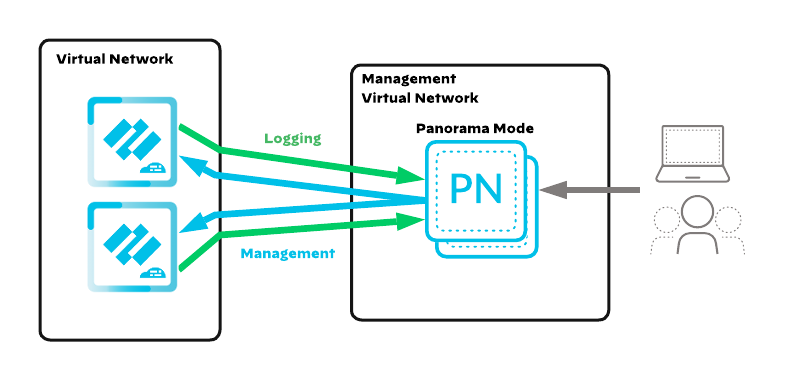
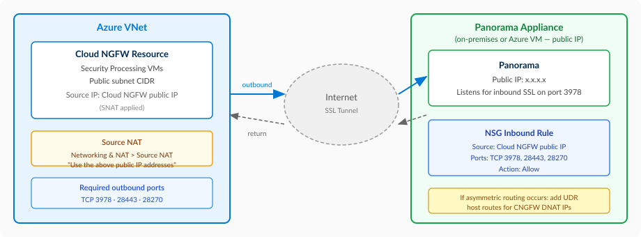
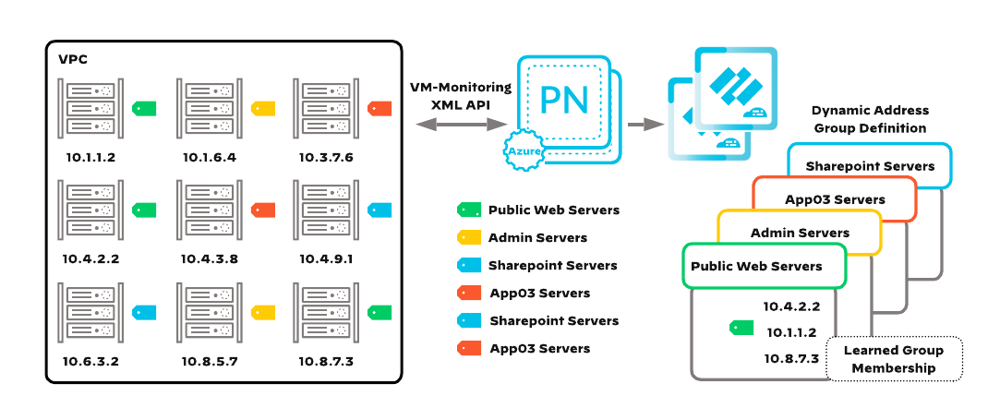
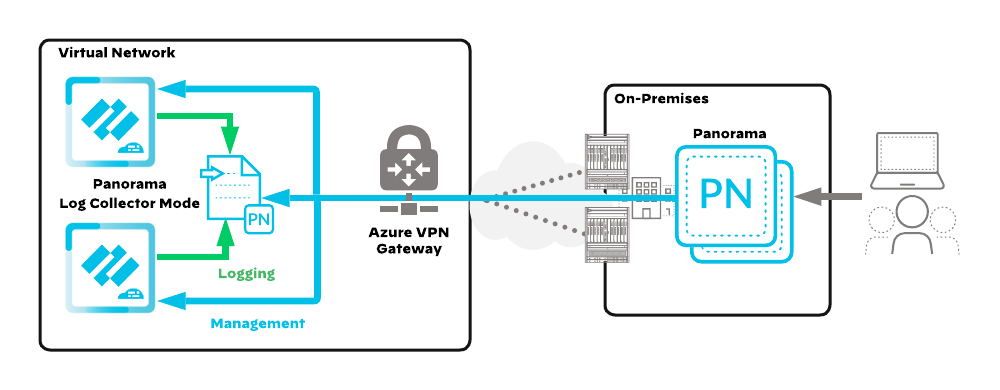
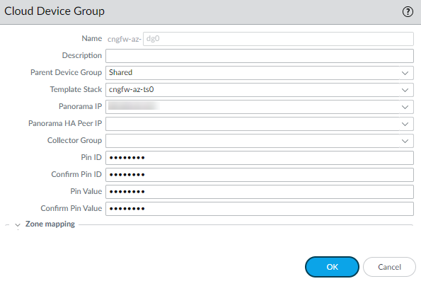
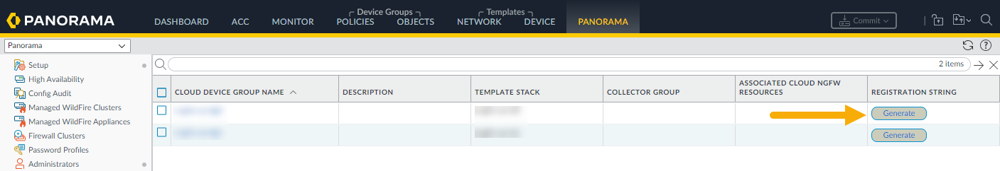
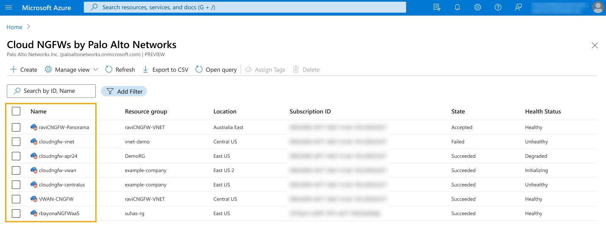
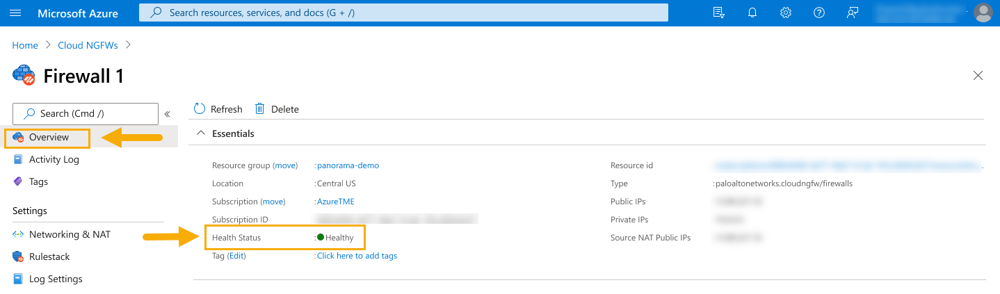

Cloud NGFW on Azure
End-to-end guide: marketplace subscription through verified traffic inspection with Cloud NGFW as a managed firewall service
This guide follows a management-first approach. Cloud NGFW management (via Panorama or Strata Cloud Manager (SCM)) is configured before any Azure infrastructure is deployed.
Design model: Centralized VNet (hub-and-spoke with VNet peering and UDRs for traffic steering).
Deployment method: All Azure infrastructure (Phases 4–6) is deployed with Terraform using the official Palo Alto Networks SWFW Modules: Cloud NGFW Centralized VNet.
If you are deploying Cloud NGFW managed by Panorama, your Panorama instance must be running PAN-OS 11.2.7 or later. Attempting to register a Cloud NGFW resource against a Panorama running an earlier version will fail at creation time with the error: "Panorama version not compatible. Please update the version to >= 11.2.7 and get a new registration string."
After upgrading Panorama to 11.2.7+, generate a new registration string from the Customer Support Portal before re-attempting the deployment. This requirement does not apply to SCM-managed or native Rulestack deployments.
Architecture Overview
Cloud NGFW for Azure is a Palo Alto Networks next-generation firewall delivered as a fully managed, cloud-native Azure service (FWaaS). There is no firewall infrastructure to deploy, patch, or scale: Palo Alto Networks manages the underlying compute, and the Cloud NGFW resource scales automatically based on subnet sizing, up to 100 Gbps per resource with appropriately sized subnets.
Cloud NGFW for Azure supports multi-region deployments. Each Cloud NGFW resource is deployed within a specific Azure region with built-in high availability. For multi-region protection, deploy a separate Cloud NGFW resource in each region.
Multi-region deployment, with Cloud NGFW spanning availability zones within each region:

Three deployment models exist. The right choice depends on the Azure networking topology and whether cross-VNet (east-west) inspection is required.
- Centralized VNet Hub-and-Spoke — traditional hub VNet with VNet peering to spoke VNets. Traffic steering uses User-Defined Routes (UDRs). Inspects all traffic types including east-west.
- Virtual WAN (vWAN) — Cloud NGFW deploys directly into a Virtual WAN hub as a SaaS NVA. Traffic steering uses routing intent policies. Inspects all traffic types including east-west.
- Distributed — each VNet gets its own dedicated Cloud NGFW instance. No hub, no peering. Simplest to deploy but does not inspect east-west traffic between VNets.
Cloud NGFW is deployed into a centralized hub VNet that contains two delegated subnets, public and private. Spoke VNets peer to the hub and use UDRs to steer traffic through the Cloud NGFW private IP for inspection.
Centralized VNet hub-and-spoke topology:

Hub VNet Requirements
- Minimum hub VNet size:
/25(128 addresses) - Two subnets, each minimum
/26(64 addresses): one public, one private - Both subnets must have subnet delegation enabled for
PaloAltoNetworks.Cloudngfw/firewalls - A public IP address associated with the Cloud NGFW for inbound and outbound internet traffic
Traffic Flows
Egress (spoke to internet):
- Workload VM in spoke VNet sends traffic destined for the internet.
- The spoke subnet's UDR (
0.0.0.0/0→ Cloud NGFW private IP) forwards traffic to the Cloud NGFW. - Cloud NGFW inspects the traffic against security policy.
- Cloud NGFW performs SNAT — translates the source from the spoke VM's private IP to the Cloud NGFW's public IP.
- Traffic egresses to the internet.
Egress traffic flow:

Ingress (internet to spoke):
- External client sends traffic to the Cloud NGFW's public IP.
- Cloud NGFW performs DNAT — translates the destination from the public IP to the spoke workload's private IP.
- Cloud NGFW performs SNAT — translates the source to its private subnet IP to ensure return traffic routes back through the firewall.
- Traffic traverses VNet peering to reach the spoke workload.
Ingress traffic flow:

East-West (spoke to spoke):
- Workload VM in spoke A sends traffic to a workload in spoke B.
- The spoke subnet's UDR forwards traffic to the Cloud NGFW private IP.
- Cloud NGFW inspects the traffic against security policy.
- Traffic exits via the same private interface and traverses VNet peering to reach spoke B.
- No NAT is performed on east-west traffic.
East-west traffic flow:

Ingress via Application Gateway:
- External client sends traffic to the Azure Application Gateway's frontend public IP.
- Application Gateway terminates the connection and forwards to its backend pool via the
app-gwsubnet. - A UDR on the Application Gateway subnet routes traffic to the Cloud NGFW private IP for inspection.
- Cloud NGFW inspects the traffic against security policy.
- Traffic traverses VNet peering to reach the backend workload in the spoke VNet.
- Return traffic from the spoke follows the UDR back through Cloud NGFW to the Application Gateway.
Ingress via Application Gateway traffic flow:

Cloud NGFW performs SNAT on all egress traffic and both SNAT + DNAT on ingress traffic. East-west traffic passes through without NAT translation. When using Application Gateway for ingress, DNAT is handled by the Application Gateway; Cloud NGFW inspects traffic in-line without performing NAT. DNAT rules for direct inbound access (without App Gateway) are configured in the Azure portal under the Cloud NGFW resource's Networking & NAT settings, not in Panorama or SCM.
Confirm you understand the Centralized VNet model before proceeding. All spoke traffic routes through UDRs to the Cloud NGFW in the hub VNet. Cloud NGFW performs SNAT on egress, DNAT + SNAT on ingress, and no NAT on east-west traffic. Application Gateway ingress uses a UDR on the App Gateway subnet to route through Cloud NGFW for inspection.
In the Virtual WAN model, Cloud NGFW deploys directly into an Azure Virtual WAN hub as a SaaS NVA. Spoke VNets connect to the vWAN hub via virtual network connections (not VNet peering). Traffic steering uses routing intent and routing policies instead of UDRs.
Virtual WAN architecture:

vWAN Traffic Flows
Egress (spoke to internet):
- A workload VM in a spoke VNet (e.g., App02 at
10.113.2.4) sends traffic to an internet destination. - The vWAN hub's routing intent policy (Internet → Cloud NGFW) directs the traffic to Cloud NGFW.
- Cloud NGFW inspects the traffic and performs SNAT — translating the source from the spoke VM's private IP to the Cloud NGFW's public IP (
198.51.100.98). - Traffic egresses to the internet destination.
vWAN egress traffic flow:

Ingress (internet to spoke):
- An external client sends traffic to the Cloud NGFW's public IP (
198.51.100.98). - Cloud NGFW performs DNAT — translating the destination to the spoke workload's private IP (e.g.,
10.112.1.4in App01) — and SNAT — translating the source to the Cloud NGFW's internal IP. - The vWAN hub forwards the traffic to the spoke VNet via the virtual network connection.
- Traffic arrives at the destination workload in the spoke VNet.
vWAN ingress traffic flow:

East-West (spoke to spoke):
- A workload in App01 (
10.112.1.4) sends traffic to a workload in App02 (10.113.2.4). - The vWAN hub's routing intent policy (Private → Cloud NGFW) directs the traffic to Cloud NGFW for inspection.
- Cloud NGFW inspects the traffic and returns it to the vWAN hub. No NAT is performed on east-west traffic.
- The vWAN hub forwards the traffic to the destination spoke VNet via the virtual network connection.
vWAN east-west traffic flow:

Ingress via Application Gateway (hub VNet):
- External client sends traffic to the Azure Application Gateway's frontend public IP. The Application Gateway resides in a separate VNet connected to the vWAN hub.
- Application Gateway terminates the connection and forwards to its backend pool.
- The vWAN hub's routing intent policy directs traffic from the Application Gateway VNet to Cloud NGFW for inspection.
- Cloud NGFW inspects the traffic and the vWAN hub forwards it to the destination spoke VNet.
vWAN ingress via Application Gateway traffic flow:

East-West: On-premises to cloud:
- On-premises client sends traffic via ExpressRoute or S2S VPN to the vWAN hub.
- The vWAN hub's routing intent policy (Private → Cloud NGFW) directs the traffic to Cloud NGFW for inspection.
- Cloud NGFW inspects the traffic and returns it to the vWAN hub.
- The vWAN hub forwards the traffic to the destination spoke VNet via the virtual network connection.
On-premises to cloud traffic flow:

vWAN hub connectivity, with spoke VNets via virtual connections and branch sites via ExpressRoute, S2S VPN, and P2S VPN:

Alternative vWAN hub view showing VNets and branch connections:

Transit VNet with VM-Series, for integrating VM-Series firewalls in a transit VNet alongside vWAN for branch connectivity:

Detailed Transit VNet view with subnet addressing and interface assignments:

Multi-region vWAN, a hub-to-hub mesh with per-region spoke VNets and branch connectivity:

Key Differences from Centralized VNet
| Aspect | Centralized VNet | Virtual WAN | Distributed |
|---|---|---|---|
| Cloud NGFW placement | Hub VNet (customer-managed) | vWAN hub (Azure-managed) | Per-application VNet |
| Traffic steering | UDRs on spoke subnets | Routing intent policies on the vWAN hub | UDRs within each VNet |
| Spoke connectivity | VNet peering | Virtual network connections | None — VNets are isolated |
| East-west inspection | Yes | Yes | No |
| Branch/on-prem connectivity | Separate VPN gateway in hub VNet | Native vWAN S2S VPN, P2S VPN, ExpressRoute | Per-VNet VPN gateway (if needed) |
| Multi-region | Separate hub VNet per region | Hub-to-hub mesh with per-hub Cloud NGFW | Separate Cloud NGFW per VNet per region |
Confirm you understand the Virtual WAN model and how it differs from Centralized VNet. Cloud NGFW deploys as a SaaS NVA inside the vWAN hub; traffic steering uses routing intent policies, not UDRs. Spoke VNets connect via virtual network connections, not VNet peering. All five traffic flows (egress, ingress, east-west, App Gateway, on-prem) pass through Cloud NGFW for inspection.
In the Distributed model, each application VNet contains its own dedicated Cloud NGFW instance with public and private delegated subnets. VNets are not connected to each other; there is no hub, no peering, and no shared firewall. Each Cloud NGFW inspects only the traffic within its own VNet.
Distributed architecture with an independent Cloud NGFW per VNet:

Per-VNet Requirements
- Each application VNet needs four subnets: public and private (delegated to Cloud NGFW, minimum
/26each), workload, and bastion (AzureBastionSubnet) - Each Cloud NGFW instance gets its own public IP for inbound DNAT and outbound SNAT
- UDR on the workload subnet routes
0.0.0.0/0to the local Cloud NGFW private IP
Traffic Flows
Egress (workload to internet):
- Workload VM sends traffic destined for the internet.
- The workload subnet's UDR (
0.0.0.0/0→ local Cloud NGFW private IP) forwards traffic to the Cloud NGFW within the same VNet. - Cloud NGFW inspects the traffic against security policy.
- Cloud NGFW performs SNAT — translates the source to this Cloud NGFW instance's public IP.
- Traffic egresses to the internet.
Distributed egress traffic flow:

Ingress (internet to workload):
- External client sends traffic to this Cloud NGFW instance's public IP.
- Cloud NGFW performs DNAT — translates the destination to the workload's private IP within the same VNet.
- Cloud NGFW performs SNAT — translates the source to its private subnet IP to ensure return traffic routes back through the firewall.
- Traffic reaches the workload VM within the same VNet (no peering needed).
Distributed ingress traffic flow:

Because application VNets are isolated, there is no east-west traffic flow to inspect. If workloads in different VNets need to communicate securely, use the Centralized VNet or Virtual WAN model instead.
Confirm the Distributed model fits your use case. Each VNet gets its own Cloud NGFW instance; there is no hub, no peering, and no east-west inspection between VNets. Choose this model only when application VNets are truly isolated and do not need to communicate with each other.
Phase 1: Prerequisites
Complete these prerequisites before building any infrastructure or configuring a management platform. Each step ensures the Azure environment and Palo Alto Networks tenant are ready for Cloud NGFW deployment.
If you are using Panorama to manage Cloud NGFW, confirm your Panorama instance is running PAN-OS 11.2.7 or later before completing any steps in this phase. Firewall creation will fail at deployment time if the Panorama version is below 11.2.7, and a new registration string must be generated after upgrading. This requirement does not apply to SCM-managed or native Rulestack deployments.
Cloud NGFW on Azure requires two separate service principals with different permission scopes. Neither is created by Terraform; both must exist before terraform init.
| Service Principal | Purpose | Role | Permission Level |
|---|---|---|---|
CloudNGFW-ServicePrincipal |
Panorama Azure plugin — VM-Monitoring, Dynamic Address Groups, resource discovery | CloudNGFW-PluginRole (custom) |
Read-only |
terraform-cloudngfw |
Terraform — create/modify/delete resource groups, VNets, route tables, Cloud NGFW resources | Contributor (built-in) |
Read-write |
Part A: Register the Panorama Plugin Service Principal
- Confirm an active Azure subscription is associated with the Azure account that will host the Cloud NGFW resources.
- Navigate to
Home > Microsoft Entra ID(formerly Azure Active Directory). - Copy the Tenant ID from the Overview tab — it is needed later for Panorama plugin configuration and Terraform variables.
- Navigate to
Home > App registrationsand clickNew registration. - Set Name to
CloudNGFW-ServicePrincipaland clickRegister. - Copy the Application (client) ID and Directory (tenant) ID.
- Navigate to
Certificates & secretsand clickNew client secret. - Set Description to
CloudNGFW-ServicePrincipal, set Expires to24 months, and clickAdd. - Copy the secret Value immediately — it cannot be retrieved after leaving the page.
You will need four values from this step: Subscription ID, Tenant ID, Application (client) ID, and Client Secret. Store them securely; the client secret is only visible at creation time.
Part B: Create the CloudNGFW-PluginRole Custom RBAC Role
The Panorama Azure plugin needs read-only access to discover VMs, network interfaces, and VNet topology for VM-Monitoring and Dynamic Address Groups. Create a custom role scoped to the minimum required permissions rather than using the broad built-in Reader role.
- Navigate to
Home > Subscriptionsand copy the Subscription ID. - Navigate to
Access Control (IAM)→Add→Add custom role. - Set Custom role name to
CloudNGFW-PluginRole. - Select
Start from scratch, clickNext, navigate to the JSON tab, and clickEdit. - Add the following permissions to the
actionsarray (the portal pre-populates the surrounding JSON structure):
"actions": [
"Microsoft.Compute/virtualMachines/read",
"Microsoft.Network/networkInterfaces/read",
"Microsoft.Network/virtualNetworks/read",
"Microsoft.Network/virtualNetworks/subnets/read",
"Microsoft.Network/publicIPAddresses/read",
"Microsoft.Network/loadBalancers/read",
"Microsoft.Network/applicationGateways/read",
"Microsoft.Network/locations/serviceTags/read",
"Microsoft.Resources/subscriptions/resourceGroups/read",
"Microsoft.Resources/subscriptions/read"
]If you prefer the command line, save the following as cloudngfw-plugin-role.json and run az role definition create --role-definition @cloudngfw-plugin-role.json:
{
"Name": "CloudNGFW-PluginRole",
"IsCustom": true,
"Description": "Minimum read-only permissions for the Panorama Azure plugin to perform VM-Monitoring and populate Dynamic Address Groups for Cloud NGFW.",
"Actions": [
"Microsoft.Compute/virtualMachines/read",
"Microsoft.Network/networkInterfaces/read",
"Microsoft.Network/virtualNetworks/read",
"Microsoft.Network/virtualNetworks/subnets/read",
"Microsoft.Network/publicIPAddresses/read",
"Microsoft.Network/loadBalancers/read",
"Microsoft.Network/applicationGateways/read",
"Microsoft.Network/locations/serviceTags/read",
"Microsoft.Resources/subscriptions/resourceGroups/read",
"Microsoft.Resources/subscriptions/read"
],
"NotActions": [],
"DataActions": [],
"NotDataActions": [],
"AssignableScopes": [
"/subscriptions/<your-subscription-id>"
]
}Each permission serves a specific purpose in the Panorama Azure plugin:
| Permission | Why the Plugin Needs It |
|---|---|
Microsoft.Compute/virtualMachines/read |
Discover VMs and their Azure tags for Dynamic Address Group membership |
Microsoft.Network/networkInterfaces/read |
Map VM NICs to private/public IP addresses |
Microsoft.Network/virtualNetworks/read |
Discover VNet topology and address spaces |
Microsoft.Network/virtualNetworks/subnets/read |
Read subnet configurations and CIDR ranges |
Microsoft.Network/publicIPAddresses/read |
Resolve public IPs associated with monitored VMs |
Microsoft.Network/loadBalancers/read |
Discover load balancer frontend/backend configurations |
Microsoft.Network/applicationGateways/read |
Discover application gateway configurations |
Microsoft.Network/locations/serviceTags/read |
Read Azure service tags for use in security policy |
Microsoft.Resources/subscriptions/resourceGroups/read |
Enumerate resource groups for scoped VM discovery |
Microsoft.Resources/subscriptions/read |
Validate subscription access during plugin credential verification. Not in canonical PAN docs — prevents a known validation warning in some Azure plugin versions. |
The built-in Reader role grants read access to all resource types in the subscription, including Key Vaults, storage accounts, and databases. The custom CloudNGFW-PluginRole follows the principle of least privilege by restricting access to only the compute and network resources the plugin actually queries.
Part C: Assign the Custom Role to the Service Principal
- Click
Review + Create, thenCreate. - Return to
Access Control (IAM)→Add→Add role assignment. - Search for
CloudNGFW-PluginRole, select it, clickNext. - Click
Select members, search forCloudNGFW-ServicePrincipal, select it, clickSelect. - Click
Review + assign.
Navigate to Home > Subscriptions > [your subscription] > Access Control (IAM) > Role assignments. Confirm CloudNGFW-ServicePrincipal appears with the CloudNGFW-PluginRole role assigned at the subscription scope.
Part D: Service Principal for Terraform Deployment
The CloudNGFW-ServicePrincipal above grants read-only permissions for the Panorama Azure plugin. Deploying Cloud NGFW infrastructure with Terraform requires a separate identity with write permissions to create resource groups, VNets, route tables, and Cloud NGFW resources. The Terraform modules do not create either service principal; both must exist before terraform init.
Option A: Logged-in user (development / Cloud Shell)
The simplest path for development is to authenticate Terraform with your own user account via az login. The user must have Contributor on the target subscription (or scoped to a resource group).
az login
az account set --subscription "<your-subscription-id>"
az account show --query '{subscription:name, id:id, tenantId:tenantId}'Option B: Service Principal (Preferred for CI/CD)
Create a Service Principal scoped to the target subscription. This provides a non-interactive identity for automation pipelines.
# Capture your subscription ID first
SUBSCRIPTION_ID=$(az account show --query id -o tsv)
# Create the SP with Contributor on the subscription
az ad sp create-for-rbac \
--name "terraform-cloudngfw" \
--role "Contributor" \
--scopes "/subscriptions/${SUBSCRIPTION_ID}"The command outputs appId, password, and tenant. Export them as environment variables for the AzureRM provider:
export ARM_CLIENT_ID="<appId>"
export ARM_CLIENT_SECRET="<password>"
export ARM_TENANT_ID="<tenant>"
export ARM_SUBSCRIPTION_ID="<subscriptionId>"You now have two service principals: CloudNGFW-ServicePrincipal (read-only, for Panorama plugin monitoring) and terraform-cloudngfw (Contributor, for Terraform infrastructure provisioning). Do not use the read-only plugin SP for Terraform; it will fail on resource creation.
Confirm the Terraform SP can authenticate:
az login --service-principal \
--username "$ARM_CLIENT_ID" \
--password "$ARM_CLIENT_SECRET" \
--tenant "$ARM_TENANT_ID"
az account show --query '{subscription:name, id:id}'Cloud NGFW is an Azure Native ISV Service available through Azure Marketplace on a pay-as-you-go (PAYG) subscription. No separate Palo Alto Networks licenses are required for the Cloud NGFW resource itself.
- Navigate to
Home > Marketplacein the Azure portal. - Search for
Palo Alto Networks. - Under Cloud Next-Generation Firewall by Palo Alto Networks, click
Subscribe. - Select the plan:
Cloud Next-Generation Firewall by Palo Alto Networks - An Azure Native ISV Service, Pay-as-you-go. - Review the terms and click
Subscribe.
To use Advanced Threat Prevention, Advanced URL Filtering, WildFire, and DNS Security, register the Azure tenant at the Palo Alto Networks Customer Support Portal after the Cloud NGFW resource is created. Without registration, only standard Threat Prevention and URL Filtering are available.
Navigate to Home > SaaS in the Azure portal. Confirm the Cloud NGFW subscription appears with a status of Subscribed.
Cloud NGFW resources can be managed by three platforms: Panorama, Strata Cloud Manager (SCM), or native Azure Rulestacks. The management mode is set per Cloud NGFW resource at creation time via the management_mode parameter. This step ensures the chosen management platform is accessible and the tenant linkage is understood.
| Management Mode | Terraform Value | When to Use |
|---|---|---|
| Panorama | panorama |
Existing Panorama deployment managing PA-Series, VM-Series, or other Cloud NGFWs. Cloud device groups manifest as global rulestacks. |
| Strata Cloud Manager | scm |
Unified cloud-native management for all Palo Alto Networks products. Folder-based policy hierarchy. |
| Native Rulestack | rulestack |
Azure-native policy management via the Azure portal or Terraform. No external Palo Alto management plane required. |
The management_mode is configured when the Cloud NGFW resource is created. Changing it later requires destroying and recreating the resource. Choose the management platform before proceeding.
Confirm the chosen management platform is accessible: Panorama web UI is reachable, or SCM tenant login succeeds at https://stratacloudmanager.paloaltonetworks.com, or the Azure portal can reach the Cloud NGFW resource creation workflow.
This guide deploys all Azure infrastructure with Terraform using the official Palo Alto Networks Azure modules. Set up one of the following environments before starting Phase 4.
| Requirement | Minimum Version |
|---|---|
| Terraform CLI | >= 1.5, < 2.0 |
hashicorp/azurerm provider |
>= 4.0 (AzureRM v4 requires subscription_id in the provider block) |
Option A: Local Workstation or Bastion Host (Preferred)
Install the following tools on your deployment machine (macOS, Linux, or Windows):
| Tool | Purpose | Install |
|---|---|---|
| Terraform CLI | Infrastructure provisioning | developer.hashicorp.com/terraform/install |
| Azure CLI | Azure authentication and resource management | learn.microsoft.com/cli/azure/install-azure-cli |
| Git | Version control for Terraform code | git-scm.com/downloads |
| VS Code (recommended) | HCL syntax highlighting, Terraform extension | code.visualstudio.com/download |
Install via Homebrew (recommended):
brew tap hashicorp/tap
brew install hashicorp/tap/terraformVerify the installation:
terraform -vInstall via winget (recommended):
winget install Hashicorp.TerraformOr download the binary manually from developer.hashicorp.com/terraform/install. Extract the .zip, place terraform.exe in a directory on your PATH (e.g., C:\tools\terraform), and add that directory to your system PATH environment variable.
Verify the installation (open a new terminal):
terraform -vterraform -v prints the installed Terraform version in a new terminal with no "command not found" error.
Git is included with the Xcode Command Line Tools. Install them with:
xcode-select --installOr install via Homebrew:
brew install gitVerify the installation:
git --versionDownload and run the installer from git-scm.com/downloads/win. The installer includes Git Bash, a Bash-compatible shell that runs all commands in this guide without modification.
Verify the installation (open a new terminal):
git --versiongit --version prints the installed Git version in a new terminal. On Windows, Git Bash is available from the Start menu.
Install via Homebrew (recommended):
brew install --cask visual-studio-codeOr download directly from code.visualstudio.com/download.
Install via winget (recommended):
winget install Microsoft.VisualStudioCodeOr download directly from code.visualstudio.com/download.
After installing VS Code, add the HashiCorp Terraform extension for syntax highlighting, autocompletion, and format-on-save for .tf files.
VS Code launches from the application menu. The HashiCorp Terraform extension shows as Installed in the Extensions panel, and opening a .tf file applies Terraform syntax highlighting.
For the Azure CLI, follow the official installation guide for your platform: Install the Azure CLI.
Confirm all tools are installed and your Azure identity is correct:
terraform -v
az --version
git --version
az account showAll shell commands in this guide use Bash syntax (Linux/macOS). If you are deploying from a Windows workstation, use one of the following approaches:
- Windows Subsystem for Linux (WSL) — Recommended: Install WSL 2 with Ubuntu, then install Terraform, Azure CLI, and Git inside the WSL environment. All commands in this guide work as-is.
- Git Bash: Installed alongside Git for Windows. Provides a Bash-compatible shell where most commands work without modification.
- PowerShell: Terraform and Azure CLI work natively, but shell syntax differs — environment variables use
$env:VARinstead of$VAR, line continuations use backtick (`) instead of backslash (\), andcurlis aliased toInvoke-WebRequest. Usecurl.exeorInvoke-WebRequestexplicitly.
If you choose to use PowerShell instead of WSL or Git Bash, translate shell commands as follows:
| Bash (this guide) | PowerShell equivalent |
|---|---|
export VAR="value" | $env:VAR = "value" |
echo $VAR | $env:VAR |
curl -Lo file URL | Invoke-WebRequest -Uri URL -OutFile file |
unzip file.zip | Expand-Archive -Path file.zip -DestinationPath . |
cat << 'EOF' > file | Use notepad file or VS Code instead |
chmod 400 key.pem | icacls key.pem /inheritance:r /grant:r "$($env:USERNAME):(R)" |
ssh -i key.pem user@host | Same syntax (OpenSSH is built into Windows 10+) |
Line continuation: \ | Line continuation: ` (backtick) |
Option B: Azure Cloud Shell (Quick Alternative)
Cloud Shell ships with Terraform and the Azure CLI pre-installed. It automatically authenticates as the logged-in portal user, with no credentials to configure.
- Open Cloud Shell from the Azure Portal (top-right toolbar, terminal icon). Choose Bash on first launch.
- Confirm the bundled tools:
terraform -v
az --version
git --version
az account showA remote state backend is critical for team collaboration, maintaining a single source of truth, and preventing concurrent modifications. Azure's azurerm backend uses a Storage Account container; state locking is provided by the native blob lease, so no separate locking table is required.
Create the Backend Resources
Create a small bootstrap resource group with a Storage Account and a container for Terraform state. The Storage Account name must be globally unique and 3–24 lowercase alphanumeric characters.
RG=tfstate-rg
LOCATION=eastus
SA=<your-unique-storage-account-name>
CONTAINER=tfstate
# Resource group
az group create --name $RG --location $LOCATION
# Storage account (versioned, TLS 1.2 only)
az storage account create \
--name $SA \
--resource-group $RG \
--location $LOCATION \
--sku Standard_LRS \
--kind StorageV2 \
--min-tls-version TLS1_2 \
--allow-blob-public-access false
# Enable blob versioning for state history
az storage account blob-service-properties update \
--account-name $SA \
--resource-group $RG \
--enable-versioning true
# Container for state
az storage container create --name $CONTAINER --account-name $SAConfigure the Backend (backend.tf)
terraform {
backend "azurerm" {
resource_group_name = "tfstate-rg"
storage_account_name = "<your-unique-storage-account-name>"
container_name = "tfstate"
key = "cloud-ngfw/azure/terraform.tfstate"
}
}Place the state Storage Account in the same region as your deployment to minimize latency. Blob versioning provides state history; the native blob lease handles concurrent-modification locking automatically; no DynamoDB-equivalent is needed.
The final az storage container create command returns "created": true, and az storage container list --account-name $SA -o table lists the tfstate container. The backend.tf file references the same resource group, Storage Account, and container names.
Store your Terraform configuration in a remote Git repository (GitHub, GitLab, Bitbucket, Azure Repos, etc.) for version control and collaboration.
- Create a new repository for your Cloud NGFW deployment code.
- Clone it to your deployment machine or Cloud Shell session.
- Bootstrap your repo from the official Palo Alto Networks reference modules:
PaloAltoNetworks/terraform-azurerm-swfw-modules(covers VM-Series and Cloud NGFW, plus reference example architectures underexamples/— seecloudngfw_transit_vnetfor the closest match to this guide). - For advanced deployments, configure a CI/CD pipeline (GitHub Actions, Azure DevOps Pipelines, GitLab CI, Terraform Cloud) that can authenticate to Azure (via the Service Principal from 1.1) and run
terraform plan/apply.
Running git remote -v inside the cloned directory shows the remote repository URL, and git status reports a clean working tree. The reference example content copied from terraform-azurerm-swfw-modules is present in the repository.
Phase 2: Management Platform Configuration
Configure the management platform before deploying any cloud infrastructure. This management-first approach ensures the Cloud NGFW resources connect to a fully prepared policy plane on first boot.
Select the management path that matches the environment. The selection persists across this page.
- Panorama — existing Panorama deployment managing PA-Series, VM-Series, or other Cloud NGFWs. Use Cloud Device Groups and Cloud Template Stacks via the Azure plugin.
- SCM — cloud-native unified management. Folder-based policy hierarchy with full API support.
A third option, native Azure Rulestack management (management_mode = "rulestack"), configures policy directly in the Azure portal or via Terraform without Panorama or SCM. This mode uses local rulestacks associated with individual Cloud NGFW resources. It is suitable for Azure-only environments that do not require cross-platform policy consistency. Native rulestack configuration is outside the scope of this guide; refer to the Cloud NGFW for Azure documentation.
Cloud NGFW integration requires Panorama running PAN-OS 11.2.7 or later and the Azure plugin version 5.2.3 or later. Panorama must be in Panorama mode (not management-only mode) to support log collection from Cloud NGFW resources.
Cloud NGFW for Azure deployments managed by Panorama require PAN-OS 11.2.7 or later. Earlier 11.2.x releases are not sufficient: the Azure resource provider will reject the registration string with "Panorama version not compatible" if the Panorama version is below 11.2.7. PAN-OS 12.0 and 12.1 are also not supported. After upgrading, generate a new registration string before retrying the deployment. Ensure the Azure plugin is version 5.2.3 or later.
- Log in to the primary Panorama appliance.
- Navigate to
Dashboardand confirm the Panorama Software Version is11.2.7or later. - Confirm the System Mode is
panorama(notmanagement-only). If it readsmanagement-only, change the mode via CLI:> request system system-mode panorama - Verify a device certificate is installed on the Panorama management server. The device certificate authenticates Panorama with the Customer Support Portal and enables cloud services integration. Navigate to
Panorama > Certificate Management > Certificatesand confirm a valid device certificate is present. If not installed, follow Install Device Certificate. - Navigate to
Panorama > Plugins. Confirmazureplugin version5.2.3or later is installed. If not, download and install it.
If running Panorama in an HA pair, install the Azure plugin on the secondary node first, then on the primary node. Reversing this order can cause plugin initialization failures.
The email address used to register Panorama on the Customer Support Portal (CSP) must match the email used for the Cloud NGFW and Panorama integration. If the emails differ, the integration will fail. Verify the CSP account email at support.paloaltonetworks.com before proceeding.
Cloud NGFW resources must be able to reach Panorama on ports 3978, 28443, and 28270. Ensure NSGs and firewall rules allow these ports between the Cloud NGFW VNet and the Panorama management interface. Configuring Permitted IP Addresses under Panorama > Setup > Management is not supported for Cloud NGFW for Azure resources.
Panorama connectivity options:
| Scenario | How It Works | NSG / Routing Notes |
|---|---|---|
| Panorama in Azure VNet (private IP) | Panorama deployed in the hub VNet or a VNet peered to it. Cloud NGFW reaches Panorama’s private IP directly. | No additional NSGs required beyond standard VNet security groups. |
| On-premises Panorama via VPN | VPN gateway in the hub VNet tunnels to on-premises. Cloud NGFW reaches Panorama’s private IP through the tunnel. | Hub VNet must have a route pointing the VPN tunnel with Panorama’s private IP as destination. |
| Panorama public IP (internet) | No peering or VPN. Cloud NGFW connects to Panorama’s public IP over the internet. | Create an NSG rule on the Panorama NIC allowing inbound from the Cloud NGFW public IP on ports 3978, 28443, 28270. |
| Panorama via vWAN (any location) | Cloud NGFW deployed in a vWAN hub. Panorama reachable at any location connected to the vWAN. | If the vWAN has NSGs for east-west traffic, add a rule allowing Cloud NGFW private IP to reach Panorama private IP on the required ports. |
If no VPN or VNet peering connects your Panorama appliance to the Cloud NGFW VNet, Cloud NGFW will connect to Panorama's public IP over the internet. This requires specific NSG rules on the Panorama side and Source NAT configuration in the Azure portal. See Step 2A.1a below for the complete setup procedure.
Dashboard shows PAN-OS 11.2.7 or later in Panorama mode. The azure plugin is installed and shows version 5.2.3 or later in the Plugins list.
The Panorama management plane, where Panorama in Panorama mode manages Cloud NGFW resources and collects logs via a management VNet:

Use this step only if Panorama has no VPN or VNet peering connection to the Cloud NGFW VNet. In this topology, the Security Processing VM instances powering the Cloud NGFW resource automatically detect that Panorama's IP address is non-RFC-1918 and route their management connections out through the public subnet using the Cloud NGFW public IP. Two things must be configured to make this work: Source NAT on the Cloud NGFW resource and an NSG inbound rule on the Panorama side.
Only follow these steps if Panorama is reachable only via its public IP (no VPN or VNet peering). If you are using private connectivity, skip this step.
Public IP connectivity path: Cloud NGFW Security Processing VMs connect to Panorama's public IP through the internet. Source NAT on the Cloud NGFW ensures a consistent public IP is used as the source, and an NSG on the Panorama side allows inbound traffic on the required management ports.

Step 1: Identify the Cloud NGFW Public IP
- In the Azure portal, navigate to your Cloud NGFW resource.
- In the left menu, select Networking & NAT.
- Under Public IP addresses, note the public IP address assigned to the Cloud NGFW resource. This is the source IP Panorama will see inbound connections from.
The Networking & NAT page showing the Cloud NGFW public IP address and Source NAT configuration:

Step 2: Configure Source NAT
Source NAT ensures that outbound connections from the Cloud NGFW to Panorama use the Cloud NGFW public IP as the source address, rather than an ephemeral Azure SNAT address. Without this, the source IP seen by Panorama changes unpredictably and the NSG allowlist cannot be pinned to a specific address.
- On the same Networking & NAT page, locate the Source NAT section.
- Select Use the above public IP addresses.
- Click Save.
If Source NAT is not configured, Azure assigns a random SNAT address to outbound connections from the Cloud NGFW. This makes it impossible to create a reliable NSG allowlist on the Panorama side, and the connection may fail intermittently as the SNAT address changes.
Source NAT set to "Use the above public IP addresses":

Step 3: Create NSG Inbound Rule on the Panorama Host
From Panorama's perspective, the Cloud NGFW management connections are inbound. Create an NSG inbound rule on the subnet or NIC associated with the Panorama appliance to allow the required management ports from the Cloud NGFW public IP.
- In the Azure portal (or your on-premises firewall if Panorama is on-premises), navigate to the NSG associated with the Panorama host NIC or subnet.
- Select Inbound security rules and click + Add.
- Configure the rule as follows:
Field Value Source IP Addresses Source IP addresses/CIDR ranges Cloud NGFW public IP (from Step 1) Source port ranges * Destination Any Service Custom Destination port ranges 3978,28443,28270Protocol TCP Action Allow Priority 300 (or lower than any deny rules) Name Allow-CloudNGFW-Panorama-Mgmt - Click Add.
If Panorama is on-premises rather than in Azure, apply the equivalent rule on the perimeter firewall or host-based firewall protecting the Panorama management interface. The source IP to allow is the Cloud NGFW public IP identified in Step 1.
NSG inbound rule allowing the Cloud NGFW public IP to reach Panorama management ports:

Step 4: Verify and Resolve Asymmetric Routing (if needed)
Asymmetric routing occurs when return traffic from Panorama cannot reach the specific Security Processing VM instance that initiated the connection. This typically happens when a load balancer intercepts the return path. If connectivity fails after completing Steps 1-3, add a UDR host route for the Cloud NGFW DNAT IP addresses to ensure return traffic bypasses the Internal Load Balancer.
- In the Azure portal, navigate to the Route Table associated with the subnet containing the Panorama host (or the gateway subnet, for on-premises scenarios).
- Add a User Defined Route:
- Address prefix: CIDRs associated with the private subnet you delegated to the Cloud NGFW resource
- Next hop type: Virtual Network
- This ensures return packets bypass the ILB and route directly back to the originating Security Processing VM instance.
After completing this step, the Cloud NGFW resource Health Status in the Azure portal changes to Healthy (green). Under Panorama, navigate to Panorama > Managed Devices and confirm the Cloud NGFW device appears with a Connected status.
The Azure plugin uses a service principal to authenticate with Azure and retrieve resource metadata (VMs, VNets, tags) for dynamic address groups.
- Navigate to
Panorama > Azure > Setup. - On the Service Principal tab, click
Add. - Set Name to
CloudNGFW-ServicePrincipal. - Enter the Subscription ID, Client ID, Client Secret, and Tenant ID values collected in Step 1.1.
- Click
OK. - Commit:
Commit > Commit to Panorama. - Re-open the service principal entry and click
Validate. Confirm the test result shows "Successfully validated service principal credentials for Azure Monitoring".
The validation may report a failure for deployment permissions. This is expected: the custom role created in Step 1.1 grants read-only permissions for monitoring, not deployment permissions.
The service principal entry on the Service Principal tab shows Valid for Azure Monitoring: Yes (green checkmark).
Dynamic Address Groups, where the Azure plugin uses the service principal and VM-Monitoring to discover tagged VMs and automatically populate DAG membership:

Cloud NGFW resources send logs to Panorama. A managed collector and collector group must exist before creating the Cloud Device Group.
- Navigate to
Panorama > Managed Collectorsand clickAdd. - On the General tab, enter the Panorama serial number in the Collector S/N field. Panorama recognizes itself and simplifies the form.
- Click
OK. - Commit:
Commit > Commit to Panorama. - Re-open the collector entry. On the Disks tab, click
Add, selectDisk A, and clickOK. - Commit again:
Commit > Commit to Panorama. - Navigate to
Panorama > Collector Groupsand clickAdd. - Set Name to
CloudNGFW-cg. - In Collector Group Members, click
Addand select the Panorama collector. - Click
OK. - Commit and push:
Commit > Commit and Push.
Navigate to Panorama > Collector Groups. The CloudNGFW-cg collector group appears with the Panorama collector listed as a member. The collector status shows Connected.
On-premises Panorama with an Azure log collector. When Panorama runs on-prem, a Panorama instance in Log Collector mode in the Azure VNet collects logs locally, connected via Azure VPN Gateway:

A registration PIN from the Palo Alto Networks Customer Support Portal authenticates the Cloud Device Group to the Cloud NGFW service.
- Sign in to Palo Alto Networks Customer Support Portal.
- Navigate to
Products > Device Certificates. - Enter a description (e.g.,
Azure Cloud NGFW VNet). - Set PIN Expiration to the desired duration.
- Click
Generate Registration PIN. - Copy and securely save the PIN ID and PIN Value.
The Device Certificates page shows the newly generated PIN with its ID and value. Both values are copied and stored securely.
A Cloud Device Group (Cloud DG) is a special-purpose Panorama device group for Cloud NGFW resources. Policies authored in the Cloud DG manifest as global rulestacks in the Cloud NGFW tenant. A Cloud Template Stack is automatically created alongside the Cloud DG.
- Navigate to
Panorama > Azure > Cloud NGFW. - Click
Add. - Set Name to
device-group-vnet. Panorama prefixes it to createcngfw-az-device-group-vnet. - Set Parent Device Group to the parent device group (e.g.,
Sharedor a previously createdAzure-Baselinegroup). - Set Template Stack to
New Template Stackand entertemplate-stack-vnet. Panorama createscngfw-az-template-stack-vnet. - Set Panorama IP to the primary Panorama IP address.
- If using Panorama HA, set Panorama HA Peer IP to the secondary Panorama IP.
- Set Collector Group to
CloudNGFW-cg. - Enter the PIN ID and PIN Value from Step 2A.4.
- Click
OK. - Commit and push:
Commit > Commit and Push.
Panorama-managed Cloud NGFW supports three zones: private, public, and loopback. Zone mapping can be configured during Cloud DG creation. Infrastructure settings such as interfaces and routing protocols configured in templates are ignored by Cloud NGFW; only certificate management and log settings are honored. See Understanding Security Zones for the full cross-cloud comparison and the critical intrazone-default warning.
The Cloud Template Stack name cannot be changed after a Cloud NGFW resource is deployed against it. Choose a descriptive, durable name now. If a rename is needed later, destroy and recreate the Cloud NGFW resource.
Two post-deployment changes force a full Cloud NGFW resource redeployment (destroy + recreate):
- Adding a log collector to Panorama after the Cloud NGFW resource is already deployed.
- Changing the Panorama IP address after the Cloud NGFW resource is already deployed.
Plan collector groups and Panorama networking before deploying Cloud NGFW resources to avoid unplanned redeployments. Alternatively, generate a new registration string and update the Cloud NGFW resource configuration in the Azure portal (see Troubleshooting).
Navigate to Panorama > Azure > Cloud NGFW. The cngfw-az-device-group-vnet entry appears with the correct template stack, collector group, and parent device group.
Cloud Device Group deployment panel in Panorama showing the Cloud NGFW linked to the Cloud Device Group:

The registration string links a Cloud NGFW resource in Azure to this Cloud Device Group. It is passed during Cloud NGFW resource creation (either in the Azure portal or via Terraform).
- Navigate to
Panorama > Azure > Cloud NGFW. - For the
cngfw-az-device-group-vnetentry, under the Registration String column, clickGenerate. - Copy and securely save the generated registration string.
The Registration String column for cngfw-az-device-group-vnet shows a populated string. The string is copied and stored securely for use in Phase 4.
Panorama: Click Generate in the Registration String column for the Cloud Device Group, then copy the string:

Configure DNS, NTP, and log forwarding in the Cloud Template Stack so all Cloud NGFW resources receive consistent baseline settings.
- Navigate to
Device, and in the Template dropdown selectcngfw-az-template-stack-vnet. - Navigate to
Setup > Services > Globaland click the edit icon. - Set Primary DNS Server to
168.63.129.16(Azure DNS). - Set Secondary DNS Server to
8.8.8.8. - Click the NTP tab.
- Set Primary NTP Server to
0.pool.ntp.org. - Set Secondary NTP Server to
1.pool.ntp.org. - Click
OK. - Navigate to
Device > Log Settings. - In the System pane, click
Add. Set Name toSystem Logs, selectPanorama/Cortex Data Lake, clickOK. - In the Configuration pane, click
Add. Set Name toConfiguration Logs, selectPanorama/Cortex Data Lake, clickOK.
168.63.129.16 is the Azure-provided DNS resolver, available from within every Azure VNet. Use it as the primary DNS server unless the environment has a custom DNS requirement.
Navigate to Device > Setup > Services with the Cloud Template Stack selected. DNS shows 168.63.129.16 / 8.8.8.8. NTP shows 0.pool.ntp.org / 1.pool.ntp.org. Log Settings show System and Configuration entries forwarding to Panorama.
Create a log forwarding profile and baseline security rules in the Cloud Device Group. Cloud NGFW resources inherit these policies as global rulestacks.
Log Forwarding Profile
- Navigate to
Objects > Log Forwarding. - Set Device Group to the parent device group (e.g.,
Azure-BaselineorShared). - Click
Add. Set Name toForward-to-Collector-Group. - Click
Addin the match list. Set Name totraffic, Log Type totraffic, selectPanorama/Cortex Data Lake, clickOK. - Repeat for log types:
threat,url,data,wildfire,decryption,auth,tunnel. - Click
OK.
Step 1: Create Address Objects
Create these address objects in the Cloud Device Group before building rules. They keep rules readable and make future updates a single-object change.
- Navigate to
Objects > Addresses. Set Device Group tocngfw-az-device-group-vnet. - Create each address object below using
Add:Name Type Value Description spoke-cidrsIP Netmask Your Azure spoke VNet CIDRs All internal Azure subnets onprem-cidrsIP Netmask Your on-premises network ranges Source for east-west access via VPN/ER dns-server-ipsIP Netmask Internal DNS resolver IPs AD DNS or Azure Private DNS forwarders db-server-ipsIP Netmask SQL Server IPs in Azure Database tier — east-west destination web-server-ipsIP Netmask Backend VM / app server IPs Inbound destination behind App Gateway appgw-subnet-cidrIP Netmask App Gateway subnet CIDR Inbound source — App GW to CNGFW - Commit:
Commit > Commit to Panorama.
Step 2: Create Security Profile Group
- Navigate to
Objects > Security Profile Groups. ClickAdd. - Name:
cngfw-baseline-protection. Assign your Antivirus, Anti-Spyware, and Vulnerability Protection profiles. ClickOK.
Step 3: Build the Rulebase
Navigate to Policies > Security > Pre Rules. Set Device Group to cngfw-az-device-group-vnet. Create rules in priority order; rules are evaluated top to bottom and the first match wins.
private = VNet-facing (spokes, on-prem via VPN/ER). public = internet-facing. East-west rules between private subnets use Rule Type intrazone.
Outbound Egress (private → public)
| Priority | Name | Src Zone | Src Addr | Dst Zone | Dst Addr | Application | Service | Action | Profile Group |
|---|---|---|---|---|---|---|---|---|---|
| 100 | allow-dns-out | private | spoke-cidrs | public | any | dns | app-default | Allow | cngfw-baseline-protection |
| 110 | allow-ntp-out | private | spoke-cidrs | public | any | ntp | app-default | Allow | none |
| 120 | allow-web-out | private | spoke-cidrs | public | any | ssl, web-browsing | app-default | Allow | cngfw-baseline-protection |
| 130 | allow-windows-updates | private | spoke-cidrs | public | any | ms-update | app-default | Allow | cngfw-baseline-protection |
| 140 | allow-pan-updates | private | spoke-cidrs | public | any | paloalto-updates | app-default | Allow | none |
| 190 | deny-egress | private | any | public | any | any | any | Deny | none |
East-West: On-Prem to Azure (private → private, intrazone)
| Priority | Name | Src Zone | Src Addr | Dst Zone | Dst Addr | Application | Service | Action | Profile Group |
|---|---|---|---|---|---|---|---|---|---|
| 200 | allow-icmp-ew | private | onprem-cidrs | private | spoke-cidrs | ping | app-default | Allow | none |
| 210 | allow-dns-internal | private | spoke-cidrs | private | dns-server-ips | dns | app-default | Allow | cngfw-baseline-protection |
| 220 | allow-ssh-ew | private | onprem-cidrs | private | spoke-cidrs | ssh | TCP/22 | Allow | cngfw-baseline-protection |
| 230 | allow-rdp-ew | private | onprem-cidrs | private | spoke-cidrs | ms-rdp | TCP/3389 | Allow | cngfw-baseline-protection |
| 240 | allow-web-ew | private | onprem-cidrs | private | spoke-cidrs | ssl, web-browsing | app-default | Allow | cngfw-baseline-protection |
| 250 | allow-sql-ew | private | onprem-cidrs | private | db-server-ips | ms-sql-db | app-default | Allow | cngfw-baseline-protection |
| 290 | deny-ew | private | any | private | any | any | any | Deny | none |
Inbound via App Gateway (public → private)
| Priority | Name | Src Zone | Src Addr | Dst Zone | Dst Addr | Application | Service | Action | Profile Group |
|---|---|---|---|---|---|---|---|---|---|
| 300 | allow-appgw-https | public | appgw-subnet-cidr | private | web-server-ips | ssl | TCP/443 | Allow | cngfw-baseline-protection |
| 310 | allow-appgw-http | public | appgw-subnet-cidr | private | web-server-ips | web-browsing | TCP/80 | Allow | cngfw-baseline-protection |
| 320 | allow-appgw-probe | public | appgw-subnet-cidr | private | web-server-ips | any | TCP/80, TCP/443 | Allow | none |
| 390 | deny-inbound | public | any | private | any | any | any | Deny | none |
Default Cleanup
- Navigate to
Policies > Security > Default Rules. - Edit intrazone-default: set Action to
Deny, enableLog at Session End, set Log Forwarding toForward-to-Collector-Group. - Edit interzone-default: set Action to
Deny, enableLog at Session End, set Log Forwarding toForward-to-Collector-Group.
Step 4: Commit and Push
- Select
Commit > Commit and Push. - Under Push Scope, confirm the Cloud Device Group
cngfw-az-device-group-vnetis selected. - Click
OK.
Navigate to Policies > Security > Pre Rules with device group cngfw-az-device-group-vnet selected. All 14 rules appear in priority order. Both intrazone-default and interzone-default under Default Rules show Action Deny with log forwarding set.
If this is a first-time deployment and your policy management choice is Strata Cloud Manager, you must first deploy a local rulestack (free) and register it with the Customer Support Portal. Once registered, the Cloud NGFW resource will display existing SCM tenants associated with the CSP account. Without this step, the SCM management option may not appear during deployment.
Before committing to SCM management, review these limitations (cannot be resolved without switching to Panorama):
- X-Forwarded-For (XFF) is not supported
- Cloud certificates are not supported
- Data Loss Prevention (DLP) is not supported
- Security rule zones must be set to
any(notpublic/private) - DNS Security and TLS Decryption are configured on the local rulestack, not in SCM
- Operational visibility and metrics dashboards are not available in SCM
Confirm that your Strata Cloud Manager (SCM) tenant is activated and has the correct license tier before deploying Azure Cloud NGFW resources with SCM management.
- Sign in to Strata Cloud Manager with a tenant administrator account.
- Navigate to
Settings→Tenant Management. - Confirm the following:
Setting Required Value License Tier Strata Cloud Manager EssentialsorProStrata Logging Service Active(included with Pro; optional add-on for Essentials)Tenant Status Active - Note the SCM Tenant Name — you will need this when configuring the
strata_cloud_manager_tenant_namein the Terraform deployment (Phase 4).
Registering a Cloud NGFW for Azure resource with SCM automatically enables SCM Pro features. The upgrade from Essentials to Pro may take 45–50 minutes on first resource registration. This includes Strata Logging Service with one year retention, centralized dashboards, and Activity Insights.
The SCM tenant shows Active status. Strata Logging Service is active. You have recorded the SCM Tenant Name for use in Phase 4.
SCM uses a hierarchical folder structure to organize policy; this is the SCM equivalent of Panorama device groups. Create a folder for the Azure Cloud NGFW deployment. Unlike AWS, Azure Cloud NGFW uses exactly two zones (public and private), so a single folder is sufficient rather than separate east-west and inbound sub-folders.
- In SCM, navigate to
Manage→Configuration→NGFW and Prisma Access. - In the Configuration Scope dropdown, click
Manage Folders. - Click
Add Folder. - Set Name to
Cloud-NGFW-Azureand select the appropriate parent folder (e.g.,All). - Click
Save. - Optionally, create sub-folders if you plan to separate policy by environment or region:
Sub-Folder Name Purpose ProductionProduction workload policies DevelopmentNon-production/test policies
Cloud NGFW on Azure supports exactly two zones: public (internet-facing) and private (VNet-facing). All traffic direction is determined by zone pairs in security rules. This is simpler than the AWS model where zones are set to any and traffic is differentiated by address ranges.
The Configuration Scope dropdown shows Cloud-NGFW-Azure (and any sub-folders). Selecting the folder shows an empty policy rulebase ready for configuration.
Security profiles enable Cloud NGFW to inspect traffic for threats beyond basic allow/deny. Create profiles for each threat type, then bundle them into a Security Profile Group.
Create Security Profiles
- In SCM, select the
Cloud-NGFW-Azurefolder from the Configuration Scope dropdown. - Navigate to
Manage→Configuration→NGFW and Prisma Access→Security Services. - Create the following profiles (use predefined
Strictprofiles for initial deployment, or create custom ones):Profile Type Name Recommended Setting Anti-Spyware strict-antispywareBlock critical/high/medium; alert on low Vulnerability Protection strict-vulnerabilityBlock critical/high; alert on medium/low URL Filtering strict-urlBlock high-risk categories (malware, phishing, C2) WildFire Analysis strict-wildfireForward all file types for analysis
Create Security Profile Group
- Navigate to
Security Services→Security Profile Groups. - Click
Add. - Set Name to
cloud-ngfw-protection. - Attach each profile:
Field Value Anti-Spyware strict-antispywareVulnerability Protection strict-vulnerabilityURL Filtering strict-urlWildFire Analysis strict-wildfire - Click
Save.
Advanced Cloud-Delivered Security Services (Advanced Threat Prevention, Advanced URL Filtering, WildFire, DNS Security) require registering your Azure tenant at the Customer Support Portal (CSP) after the Cloud NGFW resource is created. The profiles you define here will only take full effect once CDSS activation is complete in Phase 5.
Four security profiles appear under Security Services in the Cloud-NGFW-Azure folder. The cloud-ngfw-protection profile group lists all four profiles.
Create security rules in SCM. SCM-managed Cloud NGFW requires all security rules to set both source and destination zones to any. Traffic direction is differentiated using address objects (spoke CIDRs, on-prem CIDRs, server IPs) rather than zones.
Unlike Panorama-managed Cloud NGFW (which supports private and public zones), SCM-managed Cloud NGFW requires any for both source and destination zones in every rule. Logs in Strata Logging Service still display the actual zone (public/private) per session. See Understanding Security Zones for a full comparison.
Step 1: Create Address Objects
- In SCM, select the
Cloud-NGFW-Azurefolder from the Configuration Scope dropdown. - Navigate to
Manage→Configuration→Objects→Addresses. - Create each address object below:
Name Type Value Description spoke-cidrsIP Netmask Your Azure spoke VNet CIDRs All internal Azure subnets onprem-cidrsIP Netmask Your on-premises network ranges Source for east-west access via VPN/ER dns-server-ipsIP Netmask Internal DNS resolver IPs AD DNS or Azure Private DNS forwarders db-server-ipsIP Netmask SQL Server IPs in Azure Database tier web-server-ipsIP Netmask Backend VM / app server IPs Inbound destination behind App Gateway appgw-subnet-cidrIP Netmask App Gateway subnet CIDR Inbound source from App GW
Step 2: Build the Rulebase
- Navigate to
Security Services→Security Policy. Confirm theCloud-NGFW-Azurefolder is selected. - Create rules in priority order using
Add Rule. All rules use Source Zoneanyand Destination Zoneany:
Outbound Egress
| Priority | Name | Src Address | Dst Address | Application | Service | Action | Profile Group |
|---|---|---|---|---|---|---|---|
| 100 | allow-dns-out | spoke-cidrs | any | dns | app-default | Allow | cloud-ngfw-protection |
| 110 | allow-ntp-out | spoke-cidrs | any | ntp | app-default | Allow | none |
| 120 | allow-web-out | spoke-cidrs | any | ssl, web-browsing | app-default | Allow | cloud-ngfw-protection |
| 130 | allow-windows-updates | spoke-cidrs | any | ms-update | app-default | Allow | cloud-ngfw-protection |
| 140 | allow-pan-updates | spoke-cidrs | any | paloalto-updates | app-default | Allow | none |
| 190 | deny-egress | spoke-cidrs | any | any | any | Deny | none |
East-West: On-Prem to Azure
| Priority | Name | Src Address | Dst Address | Application | Service | Action | Profile Group |
|---|---|---|---|---|---|---|---|
| 200 | allow-icmp-ew | onprem-cidrs | spoke-cidrs | ping | app-default | Allow | none |
| 210 | allow-dns-internal | spoke-cidrs | dns-server-ips | dns | app-default | Allow | cloud-ngfw-protection |
| 220 | allow-ssh-ew | onprem-cidrs | spoke-cidrs | ssh | TCP/22 | Allow | cloud-ngfw-protection |
| 230 | allow-rdp-ew | onprem-cidrs | spoke-cidrs | ms-rdp | TCP/3389 | Allow | cloud-ngfw-protection |
| 240 | allow-web-ew | onprem-cidrs | spoke-cidrs | ssl, web-browsing | app-default | Allow | cloud-ngfw-protection |
| 250 | allow-sql-ew | onprem-cidrs | db-server-ips | ms-sql-db | app-default | Allow | cloud-ngfw-protection |
| 290 | deny-ew | onprem-cidrs | spoke-cidrs | any | any | Deny | none |
Inbound via App Gateway
| Priority | Name | Src Address | Dst Address | Application | Service | Action | Profile Group |
|---|---|---|---|---|---|---|---|
| 300 | allow-appgw-https | appgw-subnet-cidr | web-server-ips | ssl | TCP/443 | Allow | cloud-ngfw-protection |
| 310 | allow-appgw-http | appgw-subnet-cidr | web-server-ips | web-browsing | TCP/80 | Allow | cloud-ngfw-protection |
| 320 | allow-appgw-probe | appgw-subnet-cidr | web-server-ips | any | TCP/80, TCP/443 | Allow | none |
| 390 | deny-inbound | any | spoke-cidrs | any | any | Deny | none |
Cleanup deny-all: Add a final rule at priority 999, name deny-all, all fields any, Action Deny, Log at Session End enabled.
Step 3: Push Configuration
- Click
Push Configin the top bar. - Confirm the
Cloud-NGFW-Azurefolder is in scope and clickPush.
The Cloud-NGFW-Azure folder contains all 15 rules in priority order. Every allow rule that carries user or application traffic shows cloud-ngfw-protection in the Profile Group column. The final deny-all rule has no profile group and Log at Session End enabled.
Configure log forwarding to send all traffic and threat logs to Strata Logging Service for centralized visibility in SCM dashboards.
- In SCM, select the
Cloud-NGFW-Azurefolder from the Configuration Scope dropdown. - Navigate to
Manage→Configuration→NGFW and Prisma Access→Objects→Log Forwarding. - Click
Addto create a new log forwarding profile. - Set Name to
default. - Add match entries for the following log types, each forwarding to Strata Logging Service:
trafficthreaturldatawildfire
- Click
Save. - Attach the log forwarding profile to each security rule: edit each rule, go to the
Actionstab, and select thedefaultlog forwarding profile.
In addition to Strata Logging Service, you can configure Azure-native log destinations (Log Analytics Workspace, Storage Account, Event Hub) during the Terraform deployment in Phase 4. These complement the SCM logging and are useful for Azure-native SIEM integrations or compliance requirements.
A log forwarding profile named default exists in the Cloud-NGFW-Azure folder. Every security rule shows the log forwarding profile in the Actions column.
Push the complete configuration from SCM to store all security profiles, rules, and log forwarding settings. The Cloud NGFW resource will pull this configuration automatically when it is deployed with management_mode = "scm" in Phase 4.
- In SCM, click
Push Configin the top-right corner of the interface. - Review the summary of pending changes (folders, rules, profiles, objects).
- Select the
Cloud-NGFW-Azurefolder scope. - Click
Pushto apply changes. - Wait for the push operation to complete (status changes from
PendingtoCompleted).
At this point, the Azure Cloud NGFW resource has not been deployed yet (that happens in Phase 4). The push operation commits the configuration in SCM. When the Cloud NGFW resource is created via Terraform with management_mode = "scm" and your SCM tenant name, it automatically inherits and applies the prepared configuration from this folder.
The push operation completes with status Completed and no errors. The Push Log shows all folders, rules, and objects successfully committed.
When deploying Cloud NGFW for Azure with SCM management, Terraform needs the SCM tenant name to link the resource. Unlike Panorama (which uses a registration string), SCM linking uses the tenant name directly in the Terraform resource block.
- In SCM, navigate to
Settings→Tenant Management. - Copy the SCM Tenant Name (this is distinct from your Azure tenant ID).
- Record the following values for your
terraform.tfvarsfile in Phase 4:Terraform Variable Source management_mode"scm"(literal value)strata_cloud_manager_tenant_nameSCM Tenant Name from step 2 - Store these securely alongside the Azure subscription ID, tenant ID, and service principal credentials.
When using management_mode = "scm", you do not use the pan_rulestack_id Terraform attribute. Policy is managed entirely through SCM folders, not through Azure-native local rulestacks. These two approaches are mutually exclusive.
The SCM tenant name is recorded alongside the Azure credentials. You have confirmed that management_mode will be set to "scm" (not "rulestack") in the Terraform configuration.
Phase 3: Review Checkpoint
Before deploying any cloud infrastructure, confirm every prerequisite and management configuration is complete. This checkpoint prevents failed deployments caused by missing credentials, incomplete policy, or misconfigured management plane.
Review each item in the table below. Every item must show a green checkmark before proceeding to Phase 4.
| Item | How to Verify | Status |
|---|---|---|
| Azure Marketplace subscription active | Home > SaaS — Cloud NGFW subscription shows Subscribed |
|
| Service principal created with custom RBAC role | IAM > Role assignments — CloudNGFW-ServicePrincipal has CloudNGFW-PluginRole |
|
| Device certificate installed (Panorama path) | Panorama: Certificate Management > Certificates shows a valid device certificate |
|
| CSP email matches integration email | Email used to register Panorama on CSP matches the email used for Cloud NGFW integration | |
| Management platform accessible | Panorama web UI loads, or SCM login succeeds | |
| Cloud Device Group / SCM folder created | Panorama: Panorama > Azure > Cloud NGFW shows the Cloud DG. SCM: folder visible in hierarchy |
|
| Registration string generated (Panorama path) | Registration String column is populated for the Cloud DG | |
| Security policy committed | Panorama: Pre Rules visible in Cloud DG. SCM: rules pushed without errors | |
| Baseline template configured (Panorama path) | DNS, NTP, and log settings configured in Cloud Template Stack | |
| Terraform CLI >= 1.5 installed | terraform version reports v1.5.x or later |
|
| Azure CLI authenticated | az account show reports correct subscription |
Missing or incomplete configuration at this stage causes Cloud NGFW resources to deploy without policy, log forwarding, or management plane connectivity. Fix all issues before running terraform init.
Every row in the checklist table is confirmed. All credentials (subscription ID, tenant ID, client ID, client secret, registration string) are collected and stored securely.
Phase 4: Prepare Terraform Configuration
All Azure infrastructure is deployed with Terraform using the official Palo Alto Networks SWFW Modules for Azure. These modules encode the reference architecture and produce tested, production-ready infrastructure. The repository includes separate examples for each deployment model.
Choose the example that matches the deployment model selected in Phase 1:
- Centralized VNet —
examples/cloudngfw_centralized_vnet: hub VNet with delegated subnets, spoke VNets via peering, UDR-based traffic steering. - Virtual WAN —
examples/cloudngfw_centralized_single_vwan: vWAN hub with Cloud NGFW as SaaS NVA, spoke VNets via virtual connections, routing intent–based traffic steering. - Distributed —
examples/cloudngfw_distributed: independent Cloud NGFW per VNet, no hub or cross-VNet connectivity, per-VNet UDR-based traffic steering.
Clone the official Terraform modules repository to obtain the example configurations and module source.
git clone https://github.com/PaloAltoNetworks/terraform-azurerm-swfw-modules.git
cd terraform-azurerm-swfw-modulesThe directory terraform-azurerm-swfw-modules/examples/ exists and contains cloudngfw_centralized_vnet/, cloudngfw_centralized_single_vwan/, and cloudngfw_distributed/ example directories.
Select the deployment model that matches the architecture chosen in Phase 1. The Centralized VNet model uses hub-and-spoke VNet peering with UDR-based traffic steering. The Virtual WAN model uses a vWAN hub with routing intent policies.
- Centralized VNet — traditional hub-and-spoke with VNet peering. Use when the environment does not use Azure Virtual WAN.
- Virtual WAN — Cloud NGFW deploys into a vWAN hub as a SaaS NVA. Use when the environment already uses or plans to use Azure Virtual WAN.
- Distributed — each VNet gets its own dedicated Cloud NGFW instance. Use when VNets operate independently and do not require cross-VNet (east-west) traffic inspection.
The Distributed model does not inspect east-west traffic; VNets are isolated and not connected to each other. If cross-VNet visibility or inspection is required, choose the Centralized VNet or Virtual WAN model instead.
The cloudngfw_centralized_vnet example deploys the full hub-and-spoke architecture: transit VNet with delegated subnets, Cloud NGFW resources, spoke VNets, VNet peering, and UDR route tables.
cd examples/cloudngfw_centralized_vnetReview the key files:
main.tf— resource definitions for VNets, subnets, Cloud NGFW, peering, UDRsvariables.tf— input variable declarations with descriptions and defaultsexample.tfvars— sample variable values to customizeversions.tf— required provider versions
The working directory is examples/cloudngfw_centralized_vnet. Running ls *.tf lists at least main.tf, variables.tf, and versions.tf.
Review the key variables that control the deployment. These map to the architectural decisions made in Phase 1 and Phase 2.
| Variable | Purpose | What to Customize |
|---|---|---|
subscription_id | Azure Subscription ID | Set via ARM_SUBSCRIPTION_ID environment variable (recommended) or directly in tfvars |
region | Azure region for deployment | Must match the region where Cloud NGFW is available (e.g., North Europe) |
resource_group_name | Azure resource group for all resources | Name for the resource group (created automatically when create_resource_group = true) |
name_prefix | Prefix added to all created resource names | Include trailing delimiter (e.g., example-). Not applied to existing/sourced resources |
vnets | Transit VNet definitions with subnets, NSGs, and route tables | CIDR blocks, subnet allocations, Cloud NGFW delegation on public/private subnets |
cloudngfws | Cloud NGFW resource definitions | Attachment type (vnet/vwan), management_mode (panorama/scm/rulestack), subnet keys, cloudngfw_config with management credentials and DNAT rules |
vnet_peerings | VNet peering relationships (transit ↔ Panorama) | Local and remote VNet names, resource group names for cross-RG peering |
test_infrastructure | Spoke VNets, test VMs, Azure Bastion hosts, and load balancers | Spoke VNet CIDRs, VM placement, NSG rules, UDR routes pointing to Cloud NGFW private IP, Bastion subnets |
- Open
variables.tfand read the description for each variable. - Open the example tfvars file (
example.tfvars) to see reference values. - Pay special attention to:
- Subscription ID — Set
ARM_SUBSCRIPTION_IDas an environment variable, or setsubscription_iddirectly in tfvars. - Region — Must be a region where Cloud NGFW for Azure is available.
- Transit VNet — Minimum
/25CIDR withpublicandprivatesubnets (minimum/26each), both withenable_cloudngfw_delegation = true. - Management Mode — Set inside
cloudngfws:panoramarequirespanorama_base64_config,scmrequiresstrata_cloud_manager_tenant_name,rulestackrequiresrulestack_id. - UDR Routes — Spoke subnet route tables must point
0.0.0.0/0to the Cloud NGFW trusted subnet IP as aVirtualAppliancenext hop.
- Subscription ID — Set
Each variable in variables.tf has been reviewed. The required values (subscription ID, region, transit VNet CIDRs, management mode, and management credentials) are understood and ready to populate in terraform.tfvars.
Create a terraform.tfvars file with values specific to the deployment environment. The example below follows the reference IP schema from the SWFW modules cloudngfw_centralized_vnet example.
- Copy the example tfvars as a starting point:
cp example.tfvars terraform.tfvars - Edit
terraform.tfvarsand set values for the environment. Key settings include:# terraform.tfvars - Cloud NGFW Centralized VNet Deployment # General subscription_id = null # Use ARM_SUBSCRIPTION_ID env var (recommended) region = "North Europe" resource_group_name = "cloudngfw-vnet-common" name_prefix = "example-" # Transit VNet - minimum /25, subnets minimum /26 each vnets = { "transit" = { name = "transit" address_space = ["10.0.0.0/25"] network_security_groups = { "cloudngfw-dnat" = { name = "cloudngfw-dnat-nsg" rules = { cloudngfw-dnat-ports-allow = { name = "cloudngfw-dnat-ports-allow" priority = 100 direction = "Inbound" access = "Allow" protocol = "Tcp" source_address_prefixes = ["YOUR_PUBLIC_IP/32"] source_port_range = "*" destination_address_prefixes = ["0.0.0.0/0"] destination_port_ranges = ["80", "443"] } } } } subnets = { "public" = { name = "public" address_prefixes = ["10.0.0.0/26"] network_security_group_key = "cloudngfw-dnat" enable_cloudngfw_delegation = true } "private" = { name = "private" address_prefixes = ["10.0.0.64/26"] enable_cloudngfw_delegation = true } } } } # Cloud NGFW resource cloudngfws = { "cloudngfw" = { name = "cloudngfw" attachment_type = "vnet" virtual_network_key = "transit" untrusted_subnet_key = "public" trusted_subnet_key = "private" management_mode = "panorama" # Change to "scm" or "rulestack" cloudngfw_config = { # Panorama: paste base64 connection string from Step 2A.6 panorama_base64_config = "PASTE_BASE64_STRING_HERE" # SCM: uncomment and set tenant name instead # strata_cloud_manager_tenant_name = "your-tenant-name" # Rulestack: uncomment and set rulestack ID instead # rulestack_id = "/subscriptions/.../localRulestacks/your-rulestack" destination_nats = { "app1-tcp80-dnat" = { destination_nat_name = "app1-tcp80-dnat" destination_nat_protocol = "TCP" frontend_port = 80 backend_port = 80 backend_ip_address = "10.100.0.4" } } } } } # Spoke infrastructure (VNets, test VMs, Bastion) test_infrastructure = { "app1_testenv" = { vnets = { "app1" = { name = "app1-vnet" address_space = ["10.100.0.0/25"] hub_vnet_key = "transit" route_tables = { nva = { name = "app1-rt" routes = { "toNVA" = { name = "toNVA-udr" address_prefix = "0.0.0.0/0" next_hop_type = "VirtualAppliance" next_hop_ip_address = "10.0.0.68" # Cloud NGFW private IP } } } } subnets = { "vms" = { name = "vms" address_prefixes = ["10.100.0.0/26"] route_table_key = "nva" } "bastion" = { name = "AzureBastionSubnet" address_prefixes = ["10.100.0.64/26"] } } } } spoke_vms = { "app1_vm" = { name = "app1-vm" vnet_key = "app1" subnet_key = "vms" } } bastions = { "app1_bastion" = { name = "app1-bastion" vnet_key = "app1" subnet_key = "bastion" } } } }
Replace PASTE_BASE64_STRING_HERE with the base64 connection string generated in Step 2A.6 (Panorama path), or uncomment the strata_cloud_manager_tenant_name line (SCM path) or rulestack_id line (Rulestack path). Replace YOUR_PUBLIC_IP/32 with the IP address that will access the test infrastructure. Adjust VNet CIDRs to avoid conflicts with existing address spaces.
Both the public and private subnets in the transit VNet must be delegated to Cloud NGFW. The SWFW modules handle this delegation automatically when enable_cloudngfw_delegation = true is set in the subnet configuration. The minimum subnet size is /26.
Spoke VNets and test VMs are defined inside the test_infrastructure variable, not in the main vnets map. The module automatically creates VNet peering between each spoke and the transit VNet via the hub_vnet_key reference. UDR routes on spoke subnets point 0.0.0.0/0 to the Cloud NGFW's trusted subnet IP (10.0.0.68 in the example) as a VirtualAppliance next hop.
The terraform.tfvars file exists in the working directory with all placeholder values replaced. Running terraform validate after terraform init (Phase 5) should report no syntax errors.
The cloudngfw_centralized_single_vwan example deploys Cloud NGFW as a SaaS NVA in a Virtual WAN hub with routing intent policies, spoke VNets via virtual connections, and test infrastructure.
cd examples/cloudngfw_centralized_single_vwanReview the key files:
main.tf— resource definitions for vWAN, virtual hub, Cloud NGFW, routing intent, spoke VNetsvariables.tf— input variable declarations with descriptions and defaultsexample.tfvars— sample variable values to customizeversions.tf— required provider versions
The working directory is examples/cloudngfw_centralized_single_vwan. Running ls *.tf lists at least main.tf, variables.tf, and versions.tf.
Review the key variables that control the vWAN deployment. The main differences from the VNet model are the virtual_wans variable (replaces the transit VNet) and routing intent configuration (replaces UDRs).
| Variable | Purpose | What to Customize |
|---|---|---|
subscription_id | Azure Subscription ID | Set via ARM_SUBSCRIPTION_ID environment variable (recommended) or directly in tfvars |
region | Azure region for deployment | Must match the region where Cloud NGFW is available |
resource_group_name | Azure resource group for all resources | Name for the resource group |
name_prefix | Prefix added to all created resource names | Include trailing delimiter (e.g., example-) |
virtual_wans | Virtual WAN and virtual hub definitions | Hub address prefix, virtual connections to spoke VNets, routing intent policies (PrivateTraffic + Internet → Cloud NGFW) |
cloudngfws | Cloud NGFW resource definitions | attachment_type = "vwan", virtual_wan_key, virtual_hub_key, management_mode, cloudngfw_config with management credentials and DNAT rules |
vnets | VNets for Panorama connectivity (optional) | Only needed if peering a Panorama VNet to the vWAN hub |
test_infrastructure | Spoke VNets, test VMs, and Azure Bastion hosts | Spoke VNet CIDRs, VM placement, NSG rules, Bastion subnets |
- Open
variables.tfand read the description for each variable. - Open
example.tfvarsto see reference values. - Pay special attention to:
- Routing Intent — The
routing_intentblock insidevirtual_wanssteers both private and internet traffic to Cloud NGFW. This replaces the UDR-based routing used in the VNet model. - Virtual Connections — Spoke VNets connect to the vWAN hub via
connections(not VNet peering). Each connection references a spoke VNet key fromtest_infrastructure. - Attachment Type — Set to
vwaninsidecloudngfws, withvirtual_wan_keyandvirtual_hub_keyreferencing the vWAN and hub. - No UDRs — Unlike the VNet model, spoke subnets do not need route tables. Routing intent handles all traffic steering automatically.
- Routing Intent — The
Cloud NGFW throughput in a vWAN hub scales with the hub address space. Use at least a /16 hub for maximum throughput and auto-scaling headroom:
| Hub Address Space | NVA Subnet Hosts | Max Throughput |
|---|---|---|
/16 | 123 | ~100 Gbps |
/21 | 27 | ~50 Gbps |
/23 | 11 | ~30 Gbps |
/24 | 11 | ~30 Gbps |
The NVA subnet within the vWAN hub requires a minimum of 40 IP addresses. A /24 hub address space provides the minimum viable throughput but limits auto-scaling.
Each variable in variables.tf has been reviewed. The required values (subscription ID, region, virtual hub address prefix, routing intent policies, and management credentials) are understood and ready to populate in terraform.tfvars.
Create a terraform.tfvars file with values specific to the deployment environment. The example below follows the reference IP schema from the SWFW modules cloudngfw_centralized_single_vwan example.
- Copy the example tfvars as a starting point:
cp example.tfvars terraform.tfvars - Edit
terraform.tfvarsand set values for the environment. Key settings include:# terraform.tfvars - Cloud NGFW Virtual WAN Deployment # General subscription_id = null # Use ARM_SUBSCRIPTION_ID env var (recommended) region = "North Europe" resource_group_name = "cloudngfw-vwan" name_prefix = "example-" # Virtual WAN and Hub virtual_wans = { "virtual_wan" = { name = "virtual_wan" virtual_hubs = { "virtual_hub" = { name = "virtual_hub" address_prefix = "10.0.0.0/24" connections = { "app1-to-hub" = { name = "app1-to-hub" connection_type = "Vnet" remote_virtual_network_key = "app1" } "app2-to-hub" = { name = "app2-to-hub" connection_type = "Vnet" remote_virtual_network_key = "app2" } } routing_intent = { routing_intent_name = "routing_intent" routing_policy = [ { routing_policy_name = "PrivateTraffic" destinations = ["PrivateTraffic"] next_hop_key = "cloudngfw" }, { routing_policy_name = "Internet" destinations = ["Internet"] next_hop_key = "cloudngfw" } ] } } } } } # Cloud NGFW resource - attached to vWAN hub cloudngfws = { "cloudngfw" = { name = "cloudngfw" attachment_type = "vwan" virtual_hub_key = "virtual_hub" virtual_wan_key = "virtual_wan" management_mode = "panorama" # Change to "scm" or "rulestack" cloudngfw_config = { # Panorama: paste base64 connection string from Step 2A.6 panorama_base64_config = "PASTE_BASE64_STRING_HERE" # SCM: uncomment and set tenant name instead # strata_cloud_manager_tenant_name = "your-tenant-name" destination_nats = { "app1-tcp80-dnat" = { destination_nat_name = "app1-tcp80-dnat" destination_nat_protocol = "TCP" frontend_port = 80 backend_port = 80 backend_ip_address = "10.100.0.4" } } } } } # Spoke infrastructure (VNets, test VMs, Bastion) test_infrastructure = { "app1_testenv" = { vnets = { "app1" = { name = "app1-vnet" address_space = ["10.100.0.0/25"] subnets = { "vms" = { name = "vms" address_prefixes = ["10.100.0.0/26"] } "bastion" = { name = "AzureBastionSubnet" address_prefixes = ["10.100.0.64/26"] } } } } spoke_vms = { "app1_vm" = { name = "app1-vm" vnet_key = "app1" subnet_key = "vms" } } bastions = { "app1_bastion" = { name = "app1-bastion" vnet_key = "app1" subnet_key = "bastion" } } } }
Replace PASTE_BASE64_STRING_HERE with the base64 connection string generated in Step 2A.6 (Panorama path), or uncomment the strata_cloud_manager_tenant_name line (SCM path). Adjust VNet CIDRs and hub address prefix to avoid conflicts with existing address spaces.
Unlike the Centralized VNet model, spoke subnets do not need route tables or Cloud NGFW delegation. Routing intent policies on the vWAN hub automatically steer all private and internet traffic through Cloud NGFW. Spoke VNets connect to the hub via virtual connections defined in the connections block.
The terraform.tfvars file exists in the working directory with all placeholder values replaced. Running terraform validate after terraform init (Phase 5) should report no syntax errors.
The cloudngfw_distributed example deploys independent Cloud NGFW instances, one per VNet. Each VNet contains its own public and private delegated subnets, Cloud NGFW resource, DNAT rules, and test infrastructure. VNets are not connected to each other.
cd examples/cloudngfw_distributedReview the key files:
main.tf— resource definitions for per-VNet Cloud NGFW instances, public IPs, and test infrastructurevariables.tf— input variable declarations with descriptions and defaultsexample.tfvars— sample variable values showing a two-VNet deploymentversions.tf— required provider versions
The working directory is examples/cloudngfw_distributed. Running ls *.tf lists at least main.tf, variables.tf, and versions.tf.
Review the key variables that control the distributed deployment. The main difference from the centralized models is that each VNet defines its own Cloud NGFW; there is no transit hub VNet or vWAN hub.
| Variable | Purpose | What to Customize |
|---|---|---|
subscription_id | Azure Subscription ID | Set via ARM_SUBSCRIPTION_ID environment variable (recommended) or directly in tfvars |
region | Azure region for deployment | Must match the region where Cloud NGFW is available |
resource_group_name | Azure resource group for all resources | Name for the resource group |
name_prefix | Prefix added to all created resource names | Include trailing delimiter (e.g., example-) |
cloudngfws | Cloud NGFW resource definitions — one entry per VNet | Each entry references a VNet from test_infrastructure via virtual_network_key, with its own management_mode, credentials, and DNAT rules |
test_infrastructure | Per-application VNets with Cloud NGFW subnets, test VMs, and Bastion | VNet CIDRs, Cloud NGFW public/private subnets with enable_cloudngfw_delegation = true, UDR routes pointing to local Cloud NGFW private IP |
vnets | Additional VNets (optional) | Only needed if peering a Panorama VNet to application VNets |
- Open
variables.tfand read the description for each variable. - Open
example.tfvarsto see the reference two-VNet deployment. - Pay special attention to:
- Per-VNet Cloud NGFW — Each
cloudngfwsentry references a differentvirtual_network_keyfrom thetest_infrastructureVNets. The example deployscloudngfw1inapp1VNet andcloudngfw2inapp2VNet. - Subnet layout — Each application VNet contains four subnets:
vms(workloads),bastion(AzureBastionSubnet),public(Cloud NGFW untrusted), andprivate(Cloud NGFW trusted). Both Cloud NGFW subnets needenable_cloudngfw_delegation = true. - UDR per VNet — Each VNet's
vmssubnet has its own route table pointing0.0.0.0/0to the local Cloud NGFW's trusted subnet IP as aVirtualAppliancenext hop. - No hub, no peering — Application VNets are not peered to each other. Each Cloud NGFW inspects only the traffic within its own VNet.
- Per-VNet Cloud NGFW — Each
Because application VNets are isolated, traffic between VNets is not inspected by Cloud NGFW. If cross-VNet visibility is required, use the Centralized VNet or Virtual WAN model instead.
Each variable in variables.tf has been reviewed. The required values (subscription ID, region, per-VNet Cloud NGFW entries, application VNet CIDRs, and management credentials) are understood and ready to populate in terraform.tfvars.
Create a terraform.tfvars file with values specific to the deployment environment. The example below shows a two-VNet distributed deployment based on the SWFW modules cloudngfw_distributed example.
- Copy the example tfvars as a starting point:
cp example.tfvars terraform.tfvars - Edit
terraform.tfvarsand set values for the environment. Key settings include:# terraform.tfvars - Cloud NGFW Distributed Deployment # General subscription_id = null # Use ARM_SUBSCRIPTION_ID env var (recommended) region = "North Europe" resource_group_name = "cloudngfw-vnet-distributed" name_prefix = "example-" # Cloud NGFW resources - one per application VNet cloudngfws = { "cloudngfw1" = { name = "cloudngfw1" attachment_type = "vnet" virtual_network_key = "app1" # References VNet in test_infrastructure untrusted_subnet_key = "public" trusted_subnet_key = "private" management_mode = "panorama" # Change to "scm" or "rulestack" cloudngfw_config = { # Panorama: paste base64 connection string from Step 2A.6 panorama_base64_config = "PASTE_BASE64_STRING_HERE" # SCM: uncomment and set tenant name instead # strata_cloud_manager_tenant_name = "your-tenant-name" destination_nats = { "app1-tcp80-dnat" = { destination_nat_name = "app1-tcp80-dnat" destination_nat_protocol = "TCP" frontend_port = 80 backend_port = 80 backend_ip_address = "10.100.0.4" } "app1-tcp443-dnat" = { destination_nat_name = "app1-tcp443-dnat" destination_nat_protocol = "TCP" frontend_port = 443 backend_port = 443 backend_ip_address = "10.100.0.4" } } } } "cloudngfw2" = { name = "cloudngfw2" attachment_type = "vnet" virtual_network_key = "app2" # References VNet in test_infrastructure untrusted_subnet_key = "public" trusted_subnet_key = "private" management_mode = "panorama" cloudngfw_config = { panorama_base64_config = "PASTE_BASE64_STRING_HERE" destination_nats = { "app2-tcp80-dnat" = { destination_nat_name = "app2-tcp80-dnat" destination_nat_protocol = "TCP" frontend_port = 80 backend_port = 80 backend_ip_address = "10.100.1.4" } "app2-tcp443-dnat" = { destination_nat_name = "app2-tcp443-dnat" destination_nat_protocol = "TCP" frontend_port = 443 backend_port = 443 backend_ip_address = "10.100.1.4" } } } } } # Application VNets - each self-contained with its own Cloud NGFW subnets test_infrastructure = { "app1_testenv" = { vnets = { "app1" = { name = "app1-vnet" address_space = ["10.100.0.0/24"] network_security_groups = { "app1" = { name = "app1-nsg" rules = { from_bastion = { name = "from-bastion" priority = 100 direction = "Inbound" access = "Allow" protocol = "Tcp" source_address_prefixes = ["10.100.0.64/26"] source_port_range = "*" destination_address_prefixes = ["10.100.0.0/26"] destination_port_ranges = ["22", "3389"] } web_inbound = { name = "web-inbound" priority = 110 direction = "Inbound" access = "Allow" protocol = "Tcp" source_address_prefixes = ["0.0.0.0/0"] source_port_range = "*" destination_address_prefixes = ["10.100.0.0/26"] destination_port_ranges = ["80", "443"] } } } "cloudngfw1-dnat" = { name = "cloudngfw1-dnat-nsg" rules = { cloudngfw-dnat-ports-allow = { name = "cloudngfw-dnat-ports-allow" priority = 100 direction = "Inbound" access = "Allow" protocol = "Tcp" source_address_prefixes = ["0.0.0.0/0"] source_port_range = "*" destination_address_prefixes = ["0.0.0.0/0"] destination_port_ranges = ["80", "443"] } } } } route_tables = { nva = { name = "app1-rt" routes = { "toNVA" = { name = "toNVA-udr" address_prefix = "0.0.0.0/0" next_hop_type = "VirtualAppliance" next_hop_ip_address = "10.100.0.196" # app1 Cloud NGFW private IP } } } } subnets = { "vms" = { name = "vms" address_prefixes = ["10.100.0.0/26"] network_security_group_key = "app1" route_table_key = "nva" } "bastion" = { name = "AzureBastionSubnet" address_prefixes = ["10.100.0.64/26"] } "public" = { name = "cloudngfw-public" address_prefixes = ["10.100.0.128/26"] network_security_group_key = "cloudngfw1-dnat" enable_cloudngfw_delegation = true } "private" = { name = "cloudngfw-private" address_prefixes = ["10.100.0.192/26"] enable_cloudngfw_delegation = true } } } } spoke_vms = { "app1_vm" = { name = "app1-vm" vnet_key = "app1" subnet_key = "vms" } } bastions = { "app1_bastion" = { name = "app1-bastion" vnet_key = "app1" subnet_key = "bastion" } } } "app2_testenv" = { vnets = { "app2" = { name = "app2-vnet" address_space = ["10.100.1.0/24"] network_security_groups = { "app2" = { name = "app2-nsg" rules = { from_bastion = { name = "from-bastion" priority = 100 direction = "Inbound" access = "Allow" protocol = "Tcp" source_address_prefixes = ["10.100.1.64/26"] source_port_range = "*" destination_address_prefixes = ["10.100.1.0/26"] destination_port_ranges = ["22", "3389"] } web_inbound = { name = "web-inbound" priority = 110 direction = "Inbound" access = "Allow" protocol = "Tcp" source_address_prefixes = ["0.0.0.0/0"] source_port_range = "*" destination_address_prefixes = ["10.100.1.0/26"] destination_port_ranges = ["80", "443"] } } } "cloudngfw2-dnat" = { name = "cloudngfw2-dnat-nsg" rules = { cloudngfw-dnat-ports-allow = { name = "cloudngfw-dnat-ports-allow" priority = 100 direction = "Inbound" access = "Allow" protocol = "Tcp" source_address_prefixes = ["0.0.0.0/0"] source_port_range = "*" destination_address_prefixes = ["0.0.0.0/0"] destination_port_ranges = ["80", "443"] } } } } route_tables = { nva = { name = "app2-rt" routes = { "toNVA" = { name = "toNVA-udr" address_prefix = "0.0.0.0/0" next_hop_type = "VirtualAppliance" next_hop_ip_address = "10.100.1.196" # app2 Cloud NGFW private IP } } } } subnets = { "vms" = { name = "vms" address_prefixes = ["10.100.1.0/26"] network_security_group_key = "app2" route_table_key = "nva" } "bastion" = { name = "AzureBastionSubnet" address_prefixes = ["10.100.1.64/26"] } "public" = { name = "cloudngfw-public" address_prefixes = ["10.100.1.128/26"] network_security_group_key = "cloudngfw2-dnat" enable_cloudngfw_delegation = true } "private" = { name = "cloudngfw-private" address_prefixes = ["10.100.1.192/26"] enable_cloudngfw_delegation = true } } } } spoke_vms = { "app2_vm" = { name = "app2-vm" vnet_key = "app2" subnet_key = "vms" } } bastions = { "app2_bastion" = { name = "app2-bastion" vnet_key = "app2" subnet_key = "bastion" } } } }
Replace PASTE_BASE64_STRING_HERE in each cloudngfws entry with the base64 connection string generated in Step 2A.6 (Panorama path), or uncomment the strata_cloud_manager_tenant_name line (SCM path). Replace YOUR_PUBLIC_IP/32 with the IP address that will access the test infrastructure. Adjust VNet CIDRs to avoid conflicts with existing address spaces.
Unlike the Centralized VNet model, the distributed example defines application VNets inside the test_infrastructure variable rather than the top-level vnets map. Each VNet contains its own Cloud NGFW delegated subnets (public and private with enable_cloudngfw_delegation = true) alongside workload and bastion subnets. The cloudngfws entries reference these VNets by key.
To protect additional VNets, add a new test_infrastructure entry with the VNet definition and a corresponding cloudngfws entry referencing it. Each VNet gets its own independent Cloud NGFW instance.
The terraform.tfvars file exists in the working directory with all placeholder values replaced in both cloudngfw1 and cloudngfw2 entries. Running terraform validate after terraform init (Phase 5) should report no syntax errors.
Phase 5: Deploy & Verify Infrastructure
Execute the Terraform workflow to deploy the infrastructure defined in Phase 4. The exact resources depend on the deployment model: VNets, Cloud NGFW instances, connectivity (peering, vWAN connections, or per-VNet isolation), and traffic steering (UDRs or routing intent). Each step includes specific verification points.
Initialize the working directory to download provider plugins and module sources.
terraform initThe output ends with Terraform has been successfully initialized! The azurerm provider is listed in the initialization output.
Generate an execution plan to review all resources that will be created. Pay close attention to the Cloud NGFW resource, subnet delegations, and connectivity resources.
terraform plan -out=tfplanReview the plan output for:
- Cloud NGFW resource(s) with the correct
management_mode - Subnets delegated to
PaloAltoNetworks.Cloudngfw/firewalls(publicandprivatein each VNet that hosts a Cloud NGFW) - Public IP association(s) on the Cloud NGFW
- Centralized VNet: VNet peering between hub and each spoke, UDR route tables on spoke subnets with
0.0.0.0/0→ Cloud NGFW private IP - Virtual WAN: vWAN hub, virtual network connections to spokes, routing intent policies (PrivateTraffic + Internet → Cloud NGFW)
- Distributed: per-VNet UDR route tables with
0.0.0.0/0→ local Cloud NGFW private IP, no peering resources
The plan completes without errors. The resource count matches expectations for the chosen model. No unexpected destroy or modify actions appear.
Apply the saved plan to create all resources. Cloud NGFW resource creation can take up to 30 minutes.
terraform apply tfplanCloud NGFW resource provisioning takes up to 30 minutes. Do not interrupt the terraform apply process. The Azure portal shows the resource status transitioning from Creating to Succeeded.
Terraform output ends with Apply complete! and lists the resources created. Note the Cloud NGFW private IP address and public IP address from the outputs; these are needed for verification and spoke onboarding.
Confirm the Cloud NGFW resource is healthy and connected to the management platform.
- Navigate to
Home > Cloud NGFWs by Palo Alto Networksin the Azure portal. - Select the Cloud NGFW resource (e.g.,
cloudngfw-hub). - On the Overview page, confirm:
- Provisioning State =
Succeeded - Health Status =
Healthy(green) - Management Mode matches the configured value (
Panorama,SCM, orRulestack)
- Provisioning State =
- Under
Settings > Networking & NAT, confirm the public IP is associated and SNAT is enabled.
The Cloud NGFW resource shows Succeeded provisioning state, Healthy status, and the correct management mode. The public IP and SNAT configuration are visible under Networking & NAT.
Register the Azure tenant with the Palo Alto Networks Customer Support Portal (CSP) to activate Advanced Threat Prevention, Advanced URL Filtering, WildFire, and DNS Security on Cloud NGFW resources. Without registration, only standard Threat Prevention and URL Filtering are available.
It is not on the firewall resource, and it is not on the Azure portal's global support pane reached from the top-level search or help icon. Both of those show a generic Azure support page with no Palo Alto Networks registration option. A local rulestack must exist before the link is available; deploying one is free.
- In the Azure portal, navigate to
Cloud NGFW by Palo Alto Networks, then openLocal Rulestacks. - Select your local rulestack to open it.
- In that rulestack's left sidebar, select
Support + troubleshooting. - Click
Register your Azure tenant to a new or existing Palo Alto Networks support account. You are redirected to the Palo Alto Networks CSP. - Sign in with existing CSP credentials, or create a new CSP account.
- If Cloud Marketplace information (Tenant ID, Serial Number) is prepopulated, verify it is correct and click
Next. - Follow the prompts to complete registration.
- Complete the registration wizard. The Cloud NGFW device does not appear in the CSP until the firewall itself is deployed, so do not treat an empty device list at this point as a failure.
If the email used for the Azure subscription differs from the CSP account email, skip registration during the initial Cloud NGFW tenant login. Register the tenant later directly in the Customer Support Portal, or create a dedicated Palo Alto Networks support account for Cloud NGFW.
The registration wizard completes and reports success, and in the Azure portal, returning to Local Rulestacks > Support + troubleshooting shows the Tenant ID and Product serial number fields populated rather than blank. Once the firewall is deployed, the device also appears in the CSP under Products > Assets > Cloud NGFW.
Enable DNS Proxy if you want Cloud NGFW to inspect DNS queries from spoke VMs and apply DNS Security policies. DNS Proxy is required for DNS Security and Advanced DNS Security features.
- Navigate to the Cloud NGFW resource in the Azure portal.
- Under
Settings, clickDNS Proxy. - Select the
Enabledradio button. - Choose the DNS resolution method:
- Default — uses Azure’s default DNS server (
168.63.129.16). - Custom — specify a custom DNS server already configured in the VNet.
- Default — uses Azure’s default DNS server (
- Click
Save.
DNS Security (including Advanced DNS Security with AI-driven detection) requires DNS Proxy to be enabled. If DNS Proxy is disabled, DNS queries bypass the Cloud NGFW and DNS Security policies have no effect. Advanced DNS Security adds approximately 30% to the base firewall credit cost as an Azure consumption surcharge.
The DNS Proxy page shows Enabled. DNS queries from spoke VMs are now routed through the Cloud NGFW for inspection.
Confirm the connectivity model deployed in Phase 4 is established. The verification depends on the deployment model.
Centralized VNet — Verify VNet Peering
- Navigate to
Home > Virtual networks > hub-vnet > Peerings. - Confirm each peering entry shows Peering Status =
Connected. - Confirm
Allow forwarded trafficis enabled on the spoke side of each peering.
Virtual WAN — Verify Virtual Hub Connections
- Navigate to
Home > Virtual WANs > [your-vwan] > Virtual network connections. - Confirm each spoke VNet connection shows Connectivity status =
Connected. - Navigate to
Routing Intent and Policieson the virtual hub and confirm bothPrivateTrafficandInternetpolicies route to the Cloud NGFW next hop.
Distributed — No Connectivity to Verify
Application VNets are isolated by design; there is no peering or hub connectivity to verify. Proceed to Step 5.8.
Centralized VNet: Hub VNet peerings show Connected status. Virtual WAN: Virtual network connections show Connected and routing intent policies are active. Distributed: Skip; VNets are intentionally isolated.
Confirm traffic steering is configured to route workload traffic through the Cloud NGFW.
Centralized VNet & Distributed — Verify UDR Route Tables
- Navigate to
Home > Route tables. - Select the route table associated with a workload subnet (e.g.,
app01). - Under Routes, confirm a route exists: Address prefix =
0.0.0.0/0, Next hop type =Virtual appliance, Next hop address = Cloud NGFW private IP. - Repeat for each workload subnet's route table.
Alternatively, verify effective routes on a workload VM's NIC:
az network nic show-effective-route-table \
--resource-group rg-app01 \
--name app01-vm-nic \
--output tableIn the distributed model, each VNet has its own Cloud NGFW with its own private IP. Verify that each VNet's route table points to its own Cloud NGFW private IP, not a shared hub address.
Virtual WAN — Verify Routing Intent
vWAN deployments use routing intent policies instead of UDRs. Traffic steering is verified in Step 5.7 when confirming routing intent policies are active on the virtual hub. No UDR route tables exist for vWAN spoke subnets.
Centralized VNet / Distributed: Each workload subnet's route table contains 0.0.0.0/0 → Virtual appliance → [Cloud NGFW private IP]. The effective routes on a workload VM NIC show the UDR overriding the default internet route. Virtual WAN: Routing intent confirmed in Step 5.7; no UDRs to verify.
Phase 6: Spoke VNet Onboarding
After the core infrastructure is deployed, onboard additional spoke VNets. For the Centralized VNet model, this means creating the VNet, peering it to the hub, and configuring UDR routing. For Virtual WAN, add a virtual network connection to the hub. For the Distributed model, add a new VNet with its own Cloud NGFW instance in the Terraform configuration (Phase 4) and re-apply.
The recommended approach is to add spoke VNets to the Terraform configuration (Phase 4) and re-run terraform apply. The manual steps below are provided for environments where Terraform is not used for spoke management or for one-off testing.
Create a new spoke VNet with a non-overlapping address space.
- Navigate to
Home > Virtual networksand clickCreate. - Set Resource group to the spoke's resource group (e.g.,
rg-app03). - Set Name to
app03-vnet. - Set Region to the same region as the hub VNet.
- On the IP Addresses tab, set the address space (e.g.,
10.20.0.0/16). - Add a subnet (e.g.,
app03with10.20.1.0/24). - Click
Review + create, thenCreate.
Navigate to Home > Virtual networks. The app03-vnet VNet appears with the correct address space and subnet.
Peer the new spoke VNet to the hub VNet to enable connectivity through the Cloud NGFW.
- Navigate to
Home > Virtual networks > hub-vnet > Peerings. - Click
Add. - Set Peering link name (this VNet) to
hub-to-app03. - Ensure
Allow 'hub-vnet' to access the peered virtual networkis checked. - Set Peering link name (remote VNet) to
app03-to-hub. - Set Virtual network to
app03-vnet. - Ensure
Allow 'app03-vnet' to access 'hub-vnet'is checked. - Ensure
Allow 'app03-vnet' to receive forwarded traffic from 'hub-vnet'is checked. - Click
Add.
The Azure portal shows several similarly named checkboxes. Select only the specific options listed above. Incorrect selections can prevent traffic forwarding through the Cloud NGFW.
The peerings page shows hub-to-app03 with status Connected.
Create a route table with a default route pointing to the Cloud NGFW private IP address.
- Navigate to
Home > Route tablesand clickCreate. - Set Resource group to
rg-app03. - Set Name to
app03-udr. - Set Region to the same region as the spoke VNet.
- Set Propagate gateway routes to
No(prevents the Azure default internet route from overriding the UDR). - Click
Review + create, thenCreate. - Open the newly created route table and navigate to
Routes. - Click
Add. - Set Route name to
default-to-cloudngfw. - Set Address prefix destination to
IP Addresses. - Set Destination IP addresses/CIDR ranges to
0.0.0.0/0. - Set Next hop type to
Virtual appliance. - Set Next hop address to the Cloud NGFW private IP address (from Terraform outputs or Azure portal).
- Click
Add.
The route table app03-udr shows a route: 0.0.0.0/0 → Virtual appliance → [Cloud NGFW private IP].
Associate the route table with the spoke subnet to activate the routing.
- Navigate to
Home > Route tables > app03-udr > Subnets. - Click
Associate. - Set Virtual network to
app03-vnet. - Set Subnet to
app03. - Click
OK.
The route table app03-udr shows the app03 subnet associated under the Subnets tab.
Confirm the effective routes on a spoke VM's NIC show the UDR directing all traffic through the Cloud NGFW.
- Navigate to the spoke VM's NIC (e.g.,
Home > Virtual machines > app03-vm > Networking > Network interface). - Under Help, click
Effective routes. - Confirm the
0.0.0.0/0route shows Source =User, Next Hop Type =Virtual Appliance, Next Hop = Cloud NGFW private IP.
Alternatively, use the Azure CLI:
az network nic show-effective-route-table \
--resource-group rg-app03 \
--name app03-vm-nic \
--output tableThe effective routes show 0.0.0.0/0 with next hop Virtual Appliance pointing to the Cloud NGFW private IP. The VNet peering routes for the hub VNet address space also appear.
Phase 7: Post-Deployment Verification
Verify end-to-end traffic flows through the Cloud NGFW. These tests confirm that egress, east-west, and ingress traffic are inspected and logged correctly.
Outbound traffic flows from a spoke VM through the Cloud NGFW with SNAT before reaching the internet.
- SSH or RDP into a spoke VM (e.g.,
app01-vm). - Run a curl or wget to an external endpoint:
curl -s https://ifconfig.me- The returned IP address should be the Cloud NGFW public IP — not the VM's private IP or a NAT gateway IP.
- Check the management platform for the traffic log:
- Panorama: Navigate to
Monitor > Logs > Traffic. Filter by the Cloud DG. Confirm a log entry shows the spoke VM's private IP as source and the external IP as destination. - SCM: Navigate to
Monitor > Logs. Filter by the Azure folder. Confirm the same.
- Panorama: Navigate to
Cloud NGFW performs SNAT on all outbound traffic, translating the spoke VM's private source IP to the Cloud NGFW's public IP. The returned IP from ifconfig.me confirms this translation is working correctly.
curl https://ifconfig.me returns the Cloud NGFW public IP. A traffic log entry appears in the management platform with the correct source, destination, and application.
East-west traffic flows between spoke VNets through the Cloud NGFW without NAT translation.
- SSH into a VM in spoke A (e.g.,
app01-vmat192.168.1.4). - Attempt to reach a VM in spoke B (e.g.,
app02-vmat172.16.1.4):
# Test connectivity - use an application allowed by security policy
curl http://172.16.1.4:80- If no east-west allow rule exists for the test application, the connection is denied by the overridden intrazone-default rule. This is expected behavior confirming the Cloud NGFW is inspecting east-west traffic.
- Check the management platform for traffic or threat logs showing the connection attempt between the two spoke VMs.
Cloud NGFW does not perform NAT on east-west traffic. Both the source and destination IP addresses in the traffic logs should be the actual spoke VM private IPs.
If spoke traffic to Azure PaaS services (via private endpoints) fails TCP handshakes, enable Private Source NAT on the Cloud NGFW resource. Without it, return traffic from the PaaS service goes directly to the spoke VM (bypassing the firewall), creating an asymmetric route that breaks the TCP session. Navigate to Settings > Networking & NAT > Edit, check Enable Private Source NAT, enter the PaaS destination address, and click Save. This translates the spoke VM source IP to the Cloud NGFW private interface IP for the specified destinations.
Traffic logs show the connection attempt between 192.168.1.4 (app01) and 172.16.1.4 (app02) with no NAT. Allowed applications succeed; denied applications are logged with action deny.
Inbound traffic arrives at the Cloud NGFW public IP, undergoes DNAT and SNAT, and is forwarded to the spoke workload.
- Navigate to the Cloud NGFW resource in the Azure portal:
Settings > Networking & NAT. - Under Destination NAT (DNAT), click
Addto create a DNAT rule:
| Field | Value |
|---|---|
| Name | app01-web-inbound |
| Protocol | TCP |
| Frontend IP | Cloud NGFW public IP |
| Frontend Port | 80 |
| Backend IP | 192.168.1.4 (app01 VM) |
| Backend Port | 80 |
- Click
Save. - Ensure a security rule exists in the management platform allowing
web-browsingfrom zonepublicto zoneprivatewith the destination address matching the spoke VM. - From an external machine (outside Azure), access
http://[Cloud NGFW public IP]. - Confirm the spoke web server responds.
- Check traffic logs in the management platform. The log entry should show:
- Source: external client IP
- Destination: spoke VM IP (after DNAT)
- NAT Source: Cloud NGFW private subnet IP (SNAT)
Inbound DNAT rules are configured in the Azure portal under the Cloud NGFW resource's Networking & NAT settings, not in Panorama or SCM. Security policy (allow/deny) is still managed on the management platform.
An external client can access the spoke web server via the Cloud NGFW public IP. Traffic logs show the connection with DNAT (destination translated to spoke VM IP) and SNAT (source translated to Cloud NGFW private IP).
Cloud NGFW can send traffic, threat, and decryption logs to an Azure Log Analytics Workspace in addition to (or instead of) Panorama. Verify log delivery if Azure-native logging is configured.
- Navigate to the Cloud NGFW resource in the Azure portal.
- Under
Monitoring, clickDiagnostic settings. - If a diagnostic setting exists, confirm it targets a Log Analytics Workspace or Storage Account.
- Navigate to the Log Analytics Workspace and run a sample query:
// Query Cloud NGFW traffic logs
PaloAltoNetworksCNGFWTrafficLogs
| where TimeGenerated > ago(1h)
| project TimeGenerated, SourceAddress, DestinationAddress, Application, Action
| take 20- Confirm log entries appear that correspond to the traffic tests performed in Steps 7.1-7.3.
Cloud NGFW supports three log types for Azure diagnostics: Traffic, Threat, and Decryption. Traffic logs record session start/end for every connection. Threat logs record matches against security profiles. Decryption logs record TLS handshake outcomes.
The Log Analytics Workspace query returns log entries showing traffic from the verification tests. Source addresses, destination addresses, applications, and actions match expected values.
Confirm that the Cloud NGFW resource is enrolled in Strata Logging Service (SLS) and that logs are flowing to the centralized logging platform. SLS provides a second logging destination that correlates Cloud NGFW logs with logs from other Palo Alto Networks products (VM-Series, CN-Series, Prisma Access) in a single console.
Strata Logging Service is automatically enabled when the Cloud NGFW resource is linked to Panorama (via the Cloud Services plugin) or to SCM. No separate SLS activation or license purchase is required for Cloud NGFW; enrollment happens as part of the management platform integration completed in Phase 2. Cloud NGFW is a managed service, so there are no firewall-side configuration steps for SLS connectivity (no ports, FQDNs, or device certificates to configure).
Verify SLS Inventory
- Log in to Strata Cloud Manager.
- In the lower-left corner of the SCM interface, click the Tenant icon to view available tenants.
- Select
Strata Logging Servicefrom the tenant menu to open the Strata Logging Service dashboard. - Click
Inventoryin the left navigation. - Select the
Cloud NGFWtab. - Confirm the Cloud NGFW resource appears in the inventory list with its Resource ID, Region, and Status.
Strata Logging Service storage allocation is determined by the Cloud NGFW license tier. New SLS licenses (post-October 2024) include a default one-year log retention period with unlimited storage. To view current storage usage and retention settings, navigate to Strata Logging Service > Settings > Storage. For additional storage or retention adjustments, contact your Palo Alto Networks account team.
Query Logs in Strata Logging Service
- From the Strata Logging Service dashboard, click
Exploreto open the log query interface. - Select
Firewall/Threatfrom the log type drop-down. - Set the time range to the last 30 minutes.
- Optionally, filter by the Cloud NGFW resource name:
log source group ID = <Cloud NGFW name>. - Click
Search. The results should include sessions generated during the traffic tests in Steps 7.1–7.3.
Strata Logging Service is a complement to Azure-native logging (Log Analytics, Storage Accounts, Event Hubs), not a replacement. Azure-native logging is configured on the Cloud NGFW resource in the Azure portal under Diagnostic settings (Step 7.4). Use both for full visibility: Azure-native logging for SIEM integration and compliance, SLS for cross-product correlation with other Palo Alto Networks products.
You can also view Cloud NGFW logs directly in Strata Cloud Manager under Incidents and Alerts > Log Viewer without switching to the Strata Logging Service tenant. This provides the same log data with SCM’s native filtering and correlation interface.
The Strata Logging Service Inventory > Cloud NGFW tab lists the Cloud NGFW resource by name and resource ID. The Status column shows the resource as connected. The Explore query returns traffic log entries matching the test sessions from Steps 7.1–7.3. If the resource does not appear, wait 5 minutes and refresh; initial registration propagation can take several minutes after the management platform link in Phase 2.
Phase 8: User-ID Configuration
Enable identity-based security policy by mapping IP addresses to Active Directory users and groups on Cloud NGFW for Azure.
User-ID gives Cloud NGFW the ability to enforce security policy based on who is generating traffic, not just which IP address is involved. This lets you write rules like "allow Finance to reach the payments portal" or "deny Contractors from internal file servers." Cloud NGFW for Azure supports four mapping methods: choose the one that fits your directory and infrastructure.
User-ID is not supported on SCM-managed Cloud NGFW. SCM exposes only any for zone configuration, which means there is no private zone to enable User-ID on. Even if CIE mappings were pushed to a SCM-managed CNGFW instance, SCM security policy rules do not support the Source User field for identity-based enforcement.
If User-ID is a requirement, you must use Panorama management for your Cloud NGFW resource. The steps in this section apply to Panorama-managed Cloud NGFW only.
- Cloud NGFW can only act as a redistribution client (consumer). It cannot act as a redistribution agent or source.
- Authentication Policy and Authorization Policy are not supported on Cloud NGFW.
- The XML-API User-ID mapping method is not supported.
Enable User-ID on both the private zone (internal east-west and inbound traffic) and the public zone (outbound internet-destined traffic). Complete this step before configuring any mapping method below. On Panorama-managed Cloud NGFW, zones are configured at the device group level.
- In Panorama, select your Cloud NGFW device group from the Device Group dropdown.
- Navigate to Network > Zones.
- Select the private zone and click Override (device group override) or Edit.
- Check Enable User Identification.
- Under Include List, click Add and enter your internal corporate subnets (for example,
10.0.0.0/8or the specific RFC-1918 ranges where user workloads reside). User-ID probing only occurs for IPs within these ranges. - Under Exclude List, add subnets that must not be probed: Azure load balancer probe addresses, VNet reserved addresses, infrastructure subnets with no user workloads, and any ranges containing ephemeral or shared IPs.
- Click OK.
- Repeat for the public zone if you want identity-aware policy on outbound internet-destined traffic from identified users.
Enabling User-ID on a zone without scoping the include/exclude lists causes Cloud NGFW to attempt WMI probing against every IP address it sees, including Azure metadata endpoints, health check probe IPs, and external destinations. Scope User-ID strictly to subnets where authenticated user sessions originate.
After the commit and push in your chosen method below, navigate to Monitor > User-ID > IP-User Mapping in Panorama. Once User-ID mapping data is flowing, this view will list active user-to-IP entries for the included subnets.
Select the User-ID mapping method for your environment, complete its steps, then continue to Step 8.3 to configure group-based security policy.
- Cloud Identity Engine (CIE) — Recommended for cloud deployments. No Windows server in the firewall data path. Works with Entra ID, Okta, Google Workspace, and on-premises AD through the CIE connector agent.
- PAN-OS Integrated Agent — The firewall directly monitors AD event logs over WinRM-HTTPS. Agentless on the Windows side but requires a service account with AD event log read access and WinRM configured on each DC.
- Windows User-ID Agent — A dedicated Windows service polls AD and forwards mappings to Cloud NGFW via Panorama. Best for large-scale environments, VDI, or Terminal Server deployments.
- Panorama Redistribution — Panorama collects User-ID from other firewalls or agents in your estate and redistributes it to Cloud NGFW. Use when User-ID is already operational on other managed firewalls.
- CIE deployed and connected to your directory. See the Cloud Identity Engine Implementation Guide for full setup steps.
- Active Directory (or Entra ID / Okta / Google Workspace) environment with users and groups.
- Cloud NGFW managed via Panorama or SCM.
- The Cloud NGFW device must be associated with the CIE tenant in the CIE portal (Settings > Device Associations).
Add the CIE instance as a User-ID redistribution source on Panorama so managed Cloud NGFW instances receive user-to-IP mappings. For CNGFW, this is configured under User Redistribution, not the standalone User Identification panel.
- In Panorama, navigate to Device > User Redistribution.
- Click Add, select Cloud Identity Engine as the type, and choose your CIE tenant from the dropdown.
- Click OK.
- To enable group mapping for Panorama admin accounts (so Panorama-level policy can reference groups): navigate to the Panorama tab within User Redistribution and configure the Cloud Identity Engine instance there as well.
The CIE instance should display Status: Connected. If disconnected, confirm that Panorama has outbound HTTPS (443) access to the CIE service endpoint and that the CIE tenant is associated with this Panorama device in the CIE portal under Settings > Device Associations.
Group mapping for managed firewalls is configured through the same User Redistribution panel used in Step 8A.1.
- In Panorama, navigate to Device > User Redistribution.
- Select the CIE instance added in Step 8A.1 and configure the group mapping options, including which directory groups to include.
- Click OK.
The CIE instance must be explicitly enabled in the Cloud NGFW device group so the managed CNGFW instances receive User-ID data.
- In Panorama, select your Cloud NGFW device group from the Device Group dropdown.
- Navigate to Device > User Identification.
- Enable the Cloud Identity Engine toggle and select the CIE instance from Step 8A.1.
- Click OK.
Cloud NGFW runs multiple backend instances in a managed pool. Designate one instance as the User-ID Master Device. This instance performs the CIE polling and redistributes mappings to the other backend instances.
- In Panorama, within your Cloud NGFW device group, navigate to Device > User Identification.
- Under User-ID Master Device, select one Cloud NGFW backend serial number from the dropdown.
- Click OK.
Cloud NGFW backend instances may be replaced during scaling or maintenance events. If the selected master instance is decommissioned, User-ID mapping will stop until a new master is designated. Monitor master device status in Panorama periodically and update if the listed serial number no longer appears in the managed device list.
- In Panorama, click Commit > Commit and Push.
- Select the Cloud NGFW device group and click Commit and Push.
- Wait for the push to complete and verify there are no errors in the push summary.
Navigate to Monitor > User-ID > IP-User Mapping in Panorama and select the Cloud NGFW device group. Within a few minutes of the push, active user-to-IP mappings sourced from CIE should appear. If no mappings appear after 5 minutes, check the CIE portal to confirm that user sessions are active and that the Cloud NGFW device is listed as a consumer in the CIE segment configuration.
- Active Directory environment with users and groups.
- Cloud NGFW deployed and managed via Panorama.
- Dedicated AD service account with Remote Management User and CIMV2 WMI privileges. See Create a Dedicated Service Account.
- Windows AD server configured for WinRM over HTTPS with Basic Authentication. See Configure Server Monitoring Using WinRM.
- Cloud NGFW security policy allowing traffic from the CNGFW loopback interface to the AD server on WinRM-HTTPS (TCP 5986) and LDAP (TCP 389 or TCP 636 for LDAPS).
The WinRM-HTTPS connection requires a trusted certificate profile on Panorama to validate the AD server's certificate.
- In Panorama, navigate to Device > Certificate Management > Certificates.
- Click Import and import the root CA certificate that signed the AD server's WinRM certificate (export this from the Windows Certificate Manager on the AD server).
- Navigate to Device > Certificate Management > Certificate Profile.
- Click Add. Enter a name (e.g.,
uid-winrm-profile). - Under CA Certificates, add the imported root CA.
- Click OK.
- In Panorama, navigate to Device > User Identification > User Mapping.
- Click Edit on the Palo Alto Networks User-ID Agent Setup.
- Select the Connection Security tab.
- Set Certificate Profile to the profile created in Step 8B.1.
- Click OK.
- In Panorama, navigate to Device > User Identification > User Mapping.
- Under Server Monitor Account, click Edit and enter the service account Username and Password.
- Click OK.
- Under Server Monitoring, click Add and configure:
Field Value Name Descriptive label, e.g., corp-dc01Network Address IP address of the Active Directory domain controller Type Microsoft Active Directory Transport Protocol WinRM-HTTPS - Click OK.
Cloud NGFW for Azure routes management-plane traffic (LDAP, AD probing) through a dedicated loopback interface (loopback.3). This service route tells Panorama which interface and source address Cloud NGFW uses to reach the AD server.
- In Panorama, navigate to Device > Setup > Services.
- Click Service Route Configuration.
- Click Add and configure:
Field Value Service LDAP Source Interface loopback.3Source Address IP address of your Active Directory server - Click OK.
Add a Cloud NGFW security policy rule allowing traffic from the private zone (source: your loopback subnet) to the AD server IP on TCP 5986 (WinRM-HTTPS) and TCP 389/636 (LDAP/LDAPS). Without this rule, the loopback interface traffic will be dropped.
LDAP is used to retrieve the group membership tree from Active Directory for user-to-group policy enforcement.
- In Panorama, navigate to Device > Server Profiles > LDAP.
- Click Add and configure:
Field Value Name e.g., corp-ldapServer IP address of your AD domain controller, port 389(or636for LDAPS)Type Active Directory Base DN Your AD domain root, e.g., DC=corp,DC=example,DC=com(retrieve via ADSI Edit on the AD server)Bind DN Service account UPN, e.g., svc-uid@corp.example.comPassword Service account password - Click OK.
- Navigate to Device > User Identification > Group Mapping Settings.
- Click Add and select the LDAP profile created above as the Server Profile.
- Click OK.
- In Panorama, select your Cloud NGFW device group.
- Navigate to Device > User Identification.
- Under User-ID Master Device, select one Cloud NGFW backend instance serial number.
- Click OK.
- Click Commit > Commit and Push to the Cloud NGFW device group.
Navigate to Monitor > User-ID > Server Monitor in Panorama. The AD server entry should show Status: Connected and a recent last-seen timestamp. User-to-IP mappings appear under IP-User Mapping as users authenticate against Active Directory.
- Active Directory environment with users and groups.
- Cloud NGFW deployed and managed via Panorama.
- Windows server with the Windows-based User-ID Agent installed.
- Dedicated AD service account with Remote Management User and CIMV2 WMI privileges.
- Cloud NGFW security policy allowing inbound traffic from the CNGFW loopback interface to the Windows server on TCP 5007 (default User-ID Agent port).
Configure the agent on the Windows server before connecting Cloud NGFW to it.
- On the Windows server, open the Palo Alto Networks User-ID Agent application.
- Click Edit to open the configuration window.
- On the Credentials tab, enter the service account Username and Password.
- On the Discovery tab:
- If the AD domain controller is on the same Windows server: enable Auto Discover.
- If the AD server is a separate host: disable Auto Discover and manually add the AD server IP.
- Confirm the Listening Port is
5007(note this value for the Panorama configuration). - Click Start. The agent status should show Running and the connected AD server should appear in the Servers list with a green indicator.
The Windows Firewall on the User-ID Agent server must allow inbound TCP 5007 from the Cloud NGFW private zone IP range. Create a specific inbound rule for this port rather than disabling the Windows Firewall entirely in production.
- In Panorama, navigate to Device > Data Redistribution.
- Click Add and configure:
Field Value Name e.g., uid-agent-01Host IP address of the Windows User-ID Agent server Port 5007(or your configured port)Collects Data From User-ID Agent - Click OK.
- In Panorama, navigate to Device > Setup > Services > Service Route Configuration.
- Click Add and configure:
Field Value Service User-ID Agent Source Interface loopback.3 - Click OK.
- Verify a Cloud NGFW security policy rule allows traffic from the private zone (loopback.3 source) to the Windows server on TCP 5007.
Configure the LDAP Server Profile and Group Mapping as described in the PAN-OS Integrated Agent method (Steps 8B.5). Then complete the following:
- In your Cloud NGFW device group, navigate to Device > User Identification.
- Set the User-ID Master Device to one Cloud NGFW backend instance serial number.
- Click OK.
- In Panorama, click Commit > Commit and Push.
In Panorama, navigate to Monitor > User-ID > IP-User Mapping and confirm user-to-IP entries appear. On the Windows server, the User-ID Agent console should show the agent as Running with a populated user count from Active Directory.
- Active Directory environment with users and groups.
- Cloud NGFW deployed and managed via Panorama.
- An existing User-ID data source already operational and managed by Panorama: either a Windows-based User-ID Agent or another VM-Series or hardware firewall collecting User-ID mappings.
- Cloud NGFW security policy allowing communication with the redistribution source on the appropriate port.
- In Panorama, navigate to Panorama > Data Redistribution.
- Click Add.
- In the Add a Redistribution Agent dialog, configure:
Field Value Agent Type VM-Series (or the type matching your existing User-ID source) Host IP or FQDN of the firewall or agent that holds the User-ID mappings - Click OK.
- In Panorama, select your Cloud NGFW device group.
- Navigate to Device > Data Redistribution.
- Click Add and configure a Data Redistribution Agent pointing to Panorama as the redistribution hub.
- Click OK.
Configure the LDAP Server Profile and Group Mapping as described in the PAN-OS Integrated Agent method (Steps 8B.4 and 8B.5). Then complete the following:
- In your Cloud NGFW device group, navigate to Device > User Identification.
- Set the User-ID Master Device to one Cloud NGFW backend instance serial number.
- Click OK.
- In Panorama, click Commit > Commit and Push to the Cloud NGFW device group.
Navigate to Monitor > User-ID > IP-User Mapping in Panorama. After the push, mappings redistributed from Panorama to Cloud NGFW should appear when the Cloud NGFW device group is selected. In traffic logs, the Source User column should display usernames for sessions originating from the include-list subnets configured in Step 8.1.
With User-ID mappings active and group data imported, you can reference users and AD groups in Cloud NGFW security policy rules to enforce identity-aware access control.
- In Panorama, navigate to Policies > Security for the Cloud NGFW device group.
- Create a new security rule or edit an existing one.
- On the Source tab, under Source User, click Add.
- Type the AD group name or browse the group list:
domain\Finance-Users— matches all members of the Finance AD groupdomain\Contractors— matches contractor accounts onlyany— applies the rule to all authenticated users regardless of group
- Configure the remaining rule fields (destination, application, action) and click OK.
- Commit and push to the Cloud NGFW device group.
Generate traffic from a machine logged in as a known AD user. In Panorama, navigate to Monitor > Logs > Traffic and confirm the Source User column shows the username for matching sessions. If the column shows an IP address instead of a username, the mapping for that IP has not yet been received — check Monitor > User-ID > IP-User Mapping to confirm the host IP is present.
Phase 9: Monitoring
Cloud NGFW for Azure provides multiple monitoring surfaces covering service health, traffic and threat logs, performance metrics, and audit activity. Configure these after deployment to establish a complete operational visibility posture.
Monitor the overall health of the Cloud NGFW service at the Palo Alto Networks Status page. This page provides region-specific status and allows you to subscribe to service notifications.
Cloud NGFW for Azure displays health status as color-coded icons for both network security (Panorama connectivity) and cloud security (rulestack commit state).
| Status | Color | Network Security Meaning | Cloud Security Meaning |
|---|---|---|---|
| Healthy | Green | Primary and secondary Panorama connected to Cloud NGFW | Rulestack committed successfully on all instances |
| Degraded | Yellow | Network security is partially degraded | Cloud security is partially degraded |
| Unhealthy | Red | Cloud NGFW cannot connect to Panorama — verify registration | Rulestack commit failed on all instances |
| Initializing | Blue | Resource is initializing — wait for completion | Resource is initializing |
- In the Azure portal, search for Cloud NGFW by Palo Alto Networks.
- Select the Cloud NGFW resource.
- On the Overview pane, check the Health field for both network security and cloud security status.
- If status is Unhealthy (red): verify Panorama connectivity on ports
3978,28443, and28270, and confirm the registration string is valid.
Azure portal Cloud NGFW resource selection for health monitoring:

The Cloud NGFW resource shows Healthy (green) for both network security and cloud security. If Panorama-managed, the Associated Rulestack section shows Connected.
Cloud NGFW can forward traffic, threat, and decryption logs to an Azure Log Analytics Workspace for native Azure monitoring, or to Strata Logging Service (SLS) for Palo Alto Networks-native analysis via SCM or Panorama.
The Azure Log Analytics Workspace is not supported in the Belgium Central region. Use an alternative supported region for log analysis, or use Strata Logging Service instead.
| Log Type | What It Captures | Available Destinations |
|---|---|---|
| Traffic | Start and end of each session: source/destination IP, port, protocol, application, action | Azure Log Analytics Workspace, Strata Logging Service |
| Threat | Traffic matching security profiles: malware, spyware, vulnerability, DoS | Azure Log Analytics Workspace, Strata Logging Service |
| Decryption | SSL/TLS decryption events and certificate details | Azure Log Analytics Workspace, Strata Logging Service |
Configure Azure Log Analytics Workspace
- In the Azure portal, create a Log Analytics Workspace in a supported region.
- Navigate to the Cloud NGFW resource and select Diagnostic settings.
- Click Add diagnostic setting.
- Select the log categories to forward (Traffic, Threat, Decryption).
- Under Destination, select Send to Log Analytics workspace and choose the workspace created above.
- Click Save.
Enable Strata Logging Service for Panorama-Managed Firewalls
To enable SLS for an existing Panorama-managed Cloud NGFW without requiring PAN support intervention:
- Ensure Panorama Plugin for Azure version 5.2.3 or later is installed.
- Ensure the Azure service and Panorama are in the same Cloud Service Provider (CSP) account.
- Add Panorama to SCM/HUB: see Associate Devices with a Tenant.
- Add the Panorama device serial number to the Tenant Service Group (TSG) where SLS is enabled.
- Generate a new configuration (registration) string in Panorama.
- Update the Cloud NGFW resource in the Azure portal with the new configuration string.
Traffic and threat logs appear in the Log Analytics Workspace within a few minutes of traffic passing through Cloud NGFW. In Panorama, navigate to Monitor > Traffic and confirm log entries appear for the Cloud Device Group.
Cloud NGFW publishes custom metrics to Azure Application Insights via Azure Monitor. Use these to assess resource health, identify performance bottlenecks, and set alerting thresholds.
- In the Azure portal, search for Cloud NGFW by Palo Alto Networks.
- Select the Cloud NGFW resource you want to monitor.
- In the left menu, select Metrics.
- Use the metric picker to select Cloud NGFW metrics (throughput, session count, packet rates, etc.).
- Set the time range and aggregation as needed.
- Click New alert rule to create threshold-based alerts for critical metrics.
Azure Monitor metrics panel showing Cloud NGFW health and performance data:

The Metrics pane displays Cloud NGFW custom metrics. At least one metric chart renders without errors and shows current data points.
When Cloud NGFW is integrated with Panorama, traffic, threat, URL filtering, and decryption logs appear on the Panorama Monitor tab. The Application Command Center (ACC) provides graphical views of traffic trends filtered by Cloud Device Group.
- Log in to Panorama.
- Select Monitor.
- From the Device Group drop-down, select the Cloud Device Group (e.g.,
cngfw-az-device-group-vnet). - From the Logs menu on the left, choose a specific log type: Traffic, Threat, URL Filtering, or Decryption.
- Optionally add a filter: click the
+icon in the upper right, enter the filter name, save it, then load it to scope logs to the individual Cloud Device Group.
View Activity in the ACC
- Log in to Panorama.
- Select ACC.
- From the Device Group drop-down, select the Cloud Device Group to view activity.
The Monitor tab shows Traffic and Threat log entries scoped to the Cloud Device Group. The ACC displays traffic trend graphs for the Cloud NGFW resource.
Cloud NGFW streams activity (audit) logs to Azure, tracking all user and API operations on the Cloud NGFW tenant: creating, updating, or deleting rules, policies, and firewall resources. These logs are visible in the Azure portal and can be forwarded to a Log Analytics Workspace for long-term retention.
- In the Azure portal, navigate to the Cloud NGFW resource.
- In the left menu, select Activity log.
- Filter by time range, operation type, or initiating user as needed.
- To retain activity logs beyond the default 90-day window, configure a Diagnostic setting to export activity logs to a Log Analytics Workspace or Storage Account.
The Activity log shows recent operations for the Cloud NGFW resource (e.g., Create, Update). Log entries include the initiating user, timestamp, and result status.
Troubleshooting
Common issues encountered during Cloud NGFW for Azure deployment, organized by symptom.
Symptom: VNet peering status shows Disconnected or Initiated instead of Connected.
Possible causes:
- Overlapping address spaces between the hub and spoke VNets.
- The peering was created from only one side. Azure requires the peering configuration on both sides, but when creating from the hub, Azure auto-creates the remote side.
- Insufficient permissions to create peering in the remote VNet's subscription.
Resolution:
- Navigate to both VNets' peering pages and check the status from each side.
- If one side shows
Initiated, delete the peering from both sides and recreate it from the hub VNet, ensuring both VNets are in the same subscription or that cross-subscription permissions exist. - Verify no overlapping CIDRs exist between peered VNets.
Both sides of the peering show status Connected.
Symptom: Spoke VMs can reach the internet directly (bypassing Cloud NGFW) or cannot reach any destination.
Possible causes:
- The route table is not associated with the spoke subnet.
- The UDR next hop IP does not match the Cloud NGFW private IP.
Propagate gateway routesis set toYes, allowing system routes to override the UDR.- The route table is in a different region than the VNet.
Resolution:
- Navigate to the route table and confirm the subnet association.
- Verify the next hop address matches the Cloud NGFW private IP (visible in the Azure portal under the Cloud NGFW resource overview).
- Set
Propagate gateway routestoNoon the route table. - Use
Effective routeson a spoke VM NIC to see the active route table:
az network nic show-effective-route-table \
--resource-group rg-app01 \
--name app01-vm-nic \
--output tableEffective routes show 0.0.0.0/0 with source User pointing to the Cloud NGFW private IP.
Symptom: Traffic is blocked even though the Cloud NGFW security policy allows it. NSG flow logs show denied packets.
Possible causes:
- NSG rules on the spoke subnet or VM NIC are denying traffic before it reaches the Cloud NGFW.
- NSG rules on the hub public or private subnet are blocking traffic to/from the Cloud NGFW.
- Missing NSG on a subnet with Standard SKU public IPs (Azure blocks all traffic by default without an NSG).
Resolution:
- Review NSG rules on both spoke subnets and hub subnets.
- For the hub private subnet, ensure inbound rules allow traffic from
VirtualNetwork. - For the hub public subnet, ensure inbound rules allow traffic on the required ports (e.g.,
80,443for inbound web traffic). - Use Azure Network Watcher
NSG diagnosticsto test specific traffic flows.
NSG flow logs show allowed traffic. NSG diagnostics confirm the test traffic flow is permitted by all NSGs in the path.
Symptom: terraform init or terraform plan fails with provider-related errors.
Possible causes:
- Terraform version below the required minimum (
1.5) or above the maximum (2.0). - The
azurermprovider version is below v4 (required forsubscription_idin the provider block). - Azure CLI is not authenticated or is using the wrong subscription.
- Network connectivity issues preventing provider download from the Terraform registry.
Resolution:
- Verify Terraform version:
terraform version. - Verify Azure CLI authentication:
az account show. - If behind a proxy, set
HTTPS_PROXYenvironment variable. - Run
terraform init -upgradeto refresh provider downloads.
terraform init completes without errors. terraform plan generates a valid execution plan.
Symptom: Cloud NGFW resource shows Unhealthy status or Failed provisioning state.
Possible causes:
- Subnet delegation is missing on the public or private subnet.
- Subnet size is too small (below
/26). - The Panorama registration string is invalid or expired.
- Panorama is unreachable from the Cloud NGFW resource (network connectivity issue).
- The Azure region does not support Cloud NGFW.
Resolution:
- Check the Cloud NGFW resource
Activity login the Azure portal for specific error messages. - Verify subnet delegation: navigate to the hub VNet subnets and confirm both public and private subnets show
PaloAltoNetworks.Cloudngfw/firewallsunder Subnet delegation. - If using Panorama, verify the registration string is valid and has not expired. Generate a new one if needed.
- Verify Panorama network reachability: the Cloud NGFW must be able to reach Panorama's IP address. If Panorama is in a separate VNet, ensure peering or network connectivity exists.
The Cloud NGFW resource overview page shows Provisioning State: Succeeded and Health Status: Healthy.
Generate and apply a new registration string when making post-deployment changes to the Panorama integration. Scenarios that require a registration string update:
- Migrating Cloud NGFW from one Panorama appliance to another
- Adding a log collector to Panorama after Cloud NGFW deployment
- Moving Cloud NGFW to a different Cloud Device Group
- Changing the Panorama IP address
- Enabling or disabling Strata Logging Service on an existing Panorama-managed firewall
Generate New Registration String
- Log in to Panorama.
- Navigate to
Panorama > Azure > Cloud NGFW. - Select the Cloud Device Group and make the necessary configuration changes.
- Click
Generateto display the new registration string. - Commit changes to Panorama.
- Click
Copy Registration String.
Apply to Cloud NGFW in Azure Portal
- Log in to the Azure portal.
- Navigate to the Cloud NGFW resource.
- Go to
Settings > Security Policies. - Paste the new registration string into the Panorama Registration String field.
- Click
Save.
Azure automatically creates a dry-run instance to validate the changes. If dry-run succeeds, firewall instances are updated through a rolling upgrade (20% at a time, 80% continue processing traffic). If dry-run fails, changes revert to the previous configuration.
Palo Alto Networks recommends not pushing any configuration changes in Panorama while a registration string update is in progress. Wait until the Cloud NGFW health status returns to Healthy before making additional changes.
After the update, the Cloud NGFW resource shows Health Status = Healthy and Provision Status = Succeeded. If the status shows Degraded with a Panorama connectivity error, verify network reachability and the registration string validity.
Cloud NGFW resources follow specific lifecycle rules when managed by Panorama:
| Event | Behavior | Timeline |
|---|---|---|
| Firewall becomes unhealthy and disconnects | Device remains visible in Panorama, then is automatically removed | ~3 days after disconnect |
| Cloud NGFW instance scaled in (auto-scaling) | Grace period begins before device is removed from Panorama | 72 hours |
These grace periods prevent premature deletion of firewall entries and allow time for recovery or investigation before the device is removed from the Panorama inventory.
Symptom: Terraform fails with an error about subnet delegation, or the Cloud NGFW resource cannot be created in the specified subnets.
Possible causes:
- The subnet already has resources deployed that conflict with the delegation.
- The delegation string is misspelled (it must be exactly
PaloAltoNetworks.Cloudngfw/firewalls). - The subnet has an existing delegation to a different service.
Resolution:
- Navigate to
Hub VNet > Subnetsand check the delegation status of both public and private subnets. - If a conflicting delegation exists, remove it (this may require removing existing resources first).
- If no delegation exists, add it:
- Select the subnet
- Under Subnet delegation, choose
PaloAltoNetworks.Cloudngfw/firewalls - Click
Save
- Ensure no VMs, load balancers, or other compute resources are deployed in the delegated subnets — delegated subnets are reserved for the Cloud NGFW service.
Both hub subnets show PaloAltoNetworks.Cloudngfw/firewalls under subnet delegation. No conflicting resources exist in either subnet.
If Cloud NGFW cannot reach Panorama or the registration string fails to apply, work through this checklist before investigating network paths.
Panorama version:
- New deployments (January 2026 onward): Panorama 11.2 or above required.
- Existing deployments running 10.2 or above may continue until a mandatory upgrade notification arrives, then must upgrade within 60 days.
- Panorama 12.0 and 12.1 are not supported — Cloud NGFW connectivity will fail on these versions.
- Upgrading to 11.2.7 specifically resolves a bug where Cloud NGFW devices incorrectly consumed Panorama device license slots.
Azure plugin version:
- Must be Azure Plugin for Cloud NGFW version 5.2.3 or above.
- Check: Panorama > Plugins — if the Cloud NGFW option does not appear under the Azure plugin, the plugin is not installed or failed to install.
- HA environments: install the plugin on the secondary node first, then the primary. Reversing this order causes validation errors.
Device certificate:
- Panorama must have a device certificate installed to authenticate with the Customer Support Portal (CSP).
- Check: Panorama > Certificate Management > Device Certificate.
- Without a valid device certificate, the registration string handshake cannot complete.
Required ports open inbound to Panorama:
| Port | Protocol | Purpose |
|---|---|---|
| 3978 | TCP | Panorama management channel |
| 28443 | TCP | Cloud NGFW registration and policy sync |
| 28270 | TCP | Cloud NGFW telemetry |
Verify your NSG (and any on-premises firewall) allows these ports from the Cloud NGFW public or private IP to Panorama.
Configuring Permitted IP Addresses under Panorama > Setup > Management is not supported for Cloud NGFW resources. The Cloud NGFW management interface is fully managed by Palo Alto Networks and does not support user-defined IP access controls. Enabling this setting will block Cloud NGFW from connecting.
Panorama version is 11.2+ (excluding 12.0/12.1), Azure plugin is 5.2.3+, device certificate is installed, and all three ports are open inbound to Panorama from the Cloud NGFW IP.
Licensing and Customer Support Portal (CSP) account mismatches are a common cause of failed Panorama integration that does not produce an obvious error message.
Email mismatch between Azure and CSP (most common):
- The email used to subscribe to Cloud NGFW in Azure Marketplace must match the email registered on the CSP. If these differ, the serial number registration will fail or the device will not associate with the correct organization.
- Fix: use the same email for both, or link the Azure tenant to the correct CSP account via Azure Portal > Cloud NGFW by Palo Alto Networks > Local Rulestacks > your rulestack > Support + troubleshooting > Register your Azure tenant to a new or existing Palo Alto Networks support account.
Panorama not registered or licensed on the CSP:
- Panorama must appear on the CSP under Products > Assets with an active support license.
- Activate the Panorama support license on the CSP if this has not been done.
Cloud NGFW serial number not registered to the CSP account:
- Check: CSP > Products > Assets > Cloud NGFW tab. The serial number must appear there. If the list is empty, confirm the firewall itself was deployed, since the device is only created at firewall deployment and not at tenant registration.
- Verify in the Azure Portal: Local Rulestacks > your rulestack > Support + troubleshooting. The Tenant ID and Product serial number should both appear, confirming the link between CSP and Azure.
- If missing, register via Azure Portal > Cloud NGFW by Palo Alto Networks > Local Rulestacks > your rulestack > Support + troubleshooting > Register your Azure tenant to a new or existing Palo Alto Networks support account.
PIN ID / PIN Value issues:
- The PIN ID used in the Cloud Device Group should have a one-year expiration. If it has expired, generate a new one.
- To generate a new PIN: CSP > Assets > Device Certificates > Generate Registration PIN for VM-Series firewall. Copy the PIN ID and PIN Value into the Cloud Device Group screen in Panorama.
- The PIN is optional only if the Cloud NGFW serial number is already registered to the same CSP account as Panorama.
In the CSP, the Panorama appliance appears under Products > Assets and the Cloud NGFW serial number appears under Products > Assets > Cloud NGFW, both under the same account. In the Azure Portal, Local Rulestacks > Support + troubleshooting shows a linked Tenant ID and Product serial number.
Panorama must have network reachability to the Cloud NGFW VNet. The correct path to verify depends on your deployment topology.
| Topology | Connectivity Method | What to Check |
|---|---|---|
| Panorama in hub VNet private subnet | Direct (same subnet) | NSG on the Panorama subnet allows inbound TCP 3978, 28443, 28270 from the Cloud NGFW private IP range. |
| Panorama in peered VNet | VNet peering | VNet peering shows Connected on both sides. Route tables do not override the peering path. NSG allows the three ports from the Cloud NGFW subnet CIDR. |
| On-premises Panorama via VPN | VPN Gateway | VPN Gateway connection is up. Hub VNet has a route pointing the VPN tunnel to Panorama's private IP as the destination. NSG or on-prem firewall allows the three ports inbound. |
| Panorama public IP over internet | Public internet | NSG rule on the Panorama host subnet allows inbound traffic from the Cloud NGFW public IP to TCP 3978, 28443, 28270. Confirm the public IP used in the Cloud Device Group matches Panorama's actual public IP. |
| VWAN deployment | VWAN Hub routing | If an NSG governs east-west VWAN traffic, add a rule allowing the Cloud NGFW private IP to reach the Panorama private IP on the three ports. Confirm VWAN routing intent is configured to steer traffic through the Cloud NGFW hub. |
Symptom: Degraded health status after registration string update
When the Azure Portal shows Provision State = Accepted and Health Status = Degraded after pasting a new registration string, the string was received but Panorama could not be reached for validation.
- Confirm the Panorama IP configured in the Cloud Device Group (public or private) matches the reachable IP from the Cloud NGFW given your topology.
- Verify ports 3978, 28443, and 28270 are open between the Cloud NGFW and Panorama.
- Regenerate the registration string in Panorama and re-apply it in Azure Portal > Settings > Security Policies.
- Changing the Panorama IP address
- Adding a log collector after initial deployment
- Moving Cloud NGFW to a different Cloud Device Group
- Migrating from one Panorama appliance to another
- Enabling or disabling Strata Logging Service on an existing Panorama-managed firewall
Cloud NGFW resource Health Status returns to Healthy (green). The Associated rulestack section in the Azure portal shows Connected for the primary (and secondary, if configured) Panorama.